Hunter 사용자 가이드
버전 1.11.0 · 한국어 · 최종 갱신 2026-09-15
Hunter는 사내 서비스의 자산, 보안 진단, 발견 건, 개선 상태와 재검증을 연결하는 플랫폼입니다. 이 가이드는 일상적으로 사용하는 개발자, 운영 담당자, 보안 분석가와 검토자를 대상으로 합니다.
프로젝트 소개 · 관리자 가이드 · HTML · PDF · 전체 화면
화면은 실제 Hunter 실행 화면을 사용합니다. 로그인·OIDC·방문 추적의 변경 장면은 v1.9.0에서 갱신하고, 변경 없는 이전 기능은 v1.8.0의 검증 캡처를 보존했습니다. 저장 보기·표 표시 설정·입력 오류 안내 장면은 브라우저에서 합성 API 응답 또는 저장 실패 응답을 주입한 설명용 화면입니다. 캡처에 등장하는 예시 데이터는 문서용이며 신규 설치 시 자동으로 등록되지 않습니다. 사용 권한과 관리자 설정에 따라 보이는 메뉴가 다를 수 있습니다. 에이전트 화면의 응답과 진행 이력은 로컬 SSE 모의 모델로 검증한 예시이며 실제 모델의 품질이나 취약점 탐지 성능을 나타내지 않습니다.
1. 시작하기
1.1 로그인과 버전 확인
관리자에게 받은 Hunter 주소를 브라우저에서 엽니다. 유효한 Hunter 세션이 있으면 기존 업무 화면으로 이동합니다. 조직이 OIDC와 자동 진입을 켰다면 사내 인증 서버의 기존 세션을 먼저 확인합니다. 세션이 유효하고 추가 동의가 필요 없으면 Hunter 로그인 폼을 거치지 않고 요청한 메뉴와 목록 조건으로 돌아갑니다.
추가 인증이 필요하면 로그인 화면이 표시됩니다. 로컬 계정은 아이디와 비밀번호를 입력한 뒤 로그인을 선택하고, 사내 인증을 진행하려면 사내 SSO 로그인을 선택합니다. 자동 확인 중에는 로그인 폼 대신 확인 상태와 복구 경로를 표시합니다.
자동 시도 뒤에는 같은 브라우저에서 10분 동안 자동 재시도를 억제합니다. 로그아웃을 하면 24시간 자동 진입을 억제하므로 바로 다시 로그인되는 순환을 피할 수 있습니다. 이 억제는 명시적인 SSO 로그인이나 로컬 로그인 성공으로 해제할 수 있으며 사내 IdP 전체 세션을 종료하는 기능은 아닙니다.
SSO 장애 시 https://hunter.internal/login?local=1처럼 Hunter의 로컬 로그인 주소를 직접 엽니다. 사내 인증 서버의 주소 자체에 연결할 수 없다면 브라우저가 그 서버의 연결 오류 화면에 남을 수 있어 자동으로 Hunter에 돌아오는 것을 보장할 수 없습니다. 조직에서 안내한 실제 Hunter 주소로 복구하세요. 관리자 계정이 없는 사용자는 계정·역할을 임의로 만들어 우회하지 않고 운영 담당자에게 문의합니다.
로그인 요청이 많으면 일시적으로 429 오류가 표시될 수 있습니다. 잠시 기다린 뒤 다시 시도하고 반복해서 실패하면 관리자에게 문의하세요.
로그인 화면에 표시된 서비스 버전을 장애 문의에 함께 적어주세요. 로그인 후에는 좌측 아래 프로필 메뉴에서도 버전을 확인할 수 있습니다. SSO 계정의 비밀번호와 다중 인증은 사내 인증 시스템에서 관리합니다.
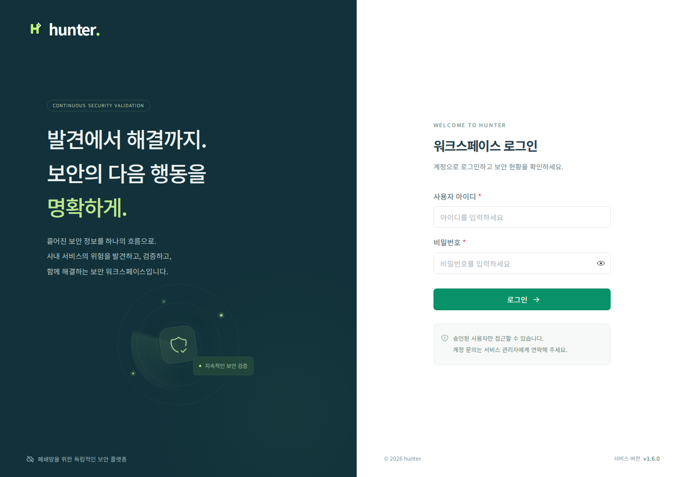
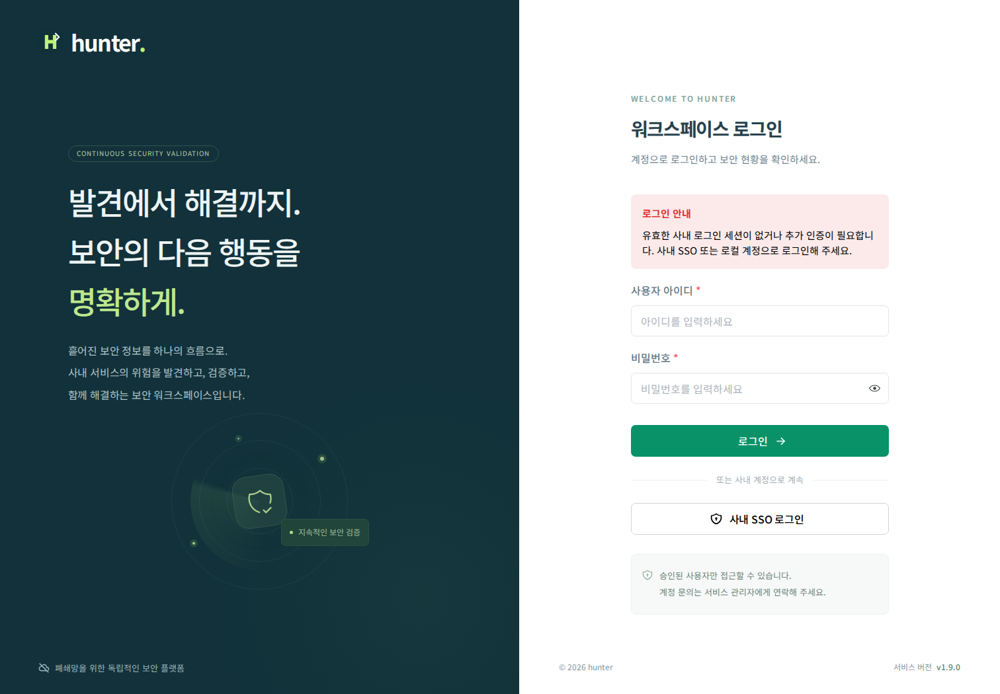
1.1.1 방문 통계와 업무 자료
관리자가 방문 추적을 켠 경우 일반 업무 페이지의 고정 경로 템플릿과 화면 제목을 격리된 코드에 전달합니다. 예를 들어 에이전트 상세는 /agents/:id로 전달하며 실제 실행 ID, 검색어, URL 해시, 사용자 이름과 업무 본문을 이벤트에 넣지 않습니다. 로그인·관리자·개인화 화면은 대상에서 제외합니다. 네트워크 통신의 IP·브라우저 정보는 수집 시스템에서 별도로 관측할 수 있습니다.
추적 코드의 연결·문법 오류는 해당 추적 기능에서 안내하고 일반 목록·진단 업무의 응답과 분리합니다. 관리자가 끄면 사용 중인 활성 화면은 최대 30초 주기의 설정 재조회로 반영합니다.
1.2 메뉴 탐색
화면은 업무 메뉴, 관리자 메뉴, 개인화 메뉴로 구분됩니다. 좌측 메뉴의 현재 위치 표시로 어느 화면에 있는지 확인합니다. 주소에 메뉴 경로가 남으므로 브라우저 새로고침 후에도 같은 화면으로 돌아옵니다. 상세 화면의 경로를 북마크할 수도 있습니다. 로그인이 필요한 주소로 들어온 경우 로그인 후 해당 메뉴와 주소에 저장된 목록 조건으로 돌아갑니다.
모바일에서는 메뉴 열기 버튼으로 탐색 메뉴를 표시합니다. 넓은 표는 좌우로 스크롤할 수 있습니다. 긴 사이드바는 메뉴와 어울리는 스크롤바를 사용합니다.
| 구분 | 메뉴 | 주로 하는 일 |
|---|---|---|
| 현황 | 보안 현황 | 서비스, 발견 건, 진단과 위험 현황 확인 |
| 업무 | 서비스 자산 | 소유 서비스의 URL, 환경, 조직과 담당자 관리 |
| 업무 | 발견 건 | 취약점 후보, 증거, 개선과 재검증 상태 관리 |
| 업무 | 조치함 | 미조치 발견 건의 SLA·위협 정보·우선순위와 댓글 |
| 업무 | 소프트웨어 구성 | SBOM 반입, 구성요소·라이선스·버전 비교 |
| 업무 | 진단 캠페인 | 여러 대상의 진단 실행과 이전 결과 비교 |
| 업무 | 진단 작업 | 진단 요청과 진행·완료·실패 상태 확인 |
| 업무 | 진단 예약 | 5분~7일 간격의 주기적 진단 설정 |
| 업무 | 개선 요청 | 개선 초안 작성과 외부 시스템 발송 |
| 업무 | 관계 그래프 | 서비스, 구성요소와 발견 건의 연결 확인 |
| 업무 | 권한 검증 | 역할별 합성 데이터 접근 시나리오 정의 |
| 업무 | 보고서 | 현황 확인 및 JSON·CSV 내보내기 |
| 업무 | 기여 현황 | 검토된 발견 건의 기여 점수 확인 |
| 업무 | AI 분석 도우미 | 사내 모델과 스트리밍 대화 |
| 업무 | 에이전트 진단 | 서비스별 계획·작업·도구 호출과 실시간 실행 이력 |
| 선택 | 검토·승인 | 관리자가 켠 경우에만 진단 승인·반려 |
| 개인화 | 내 프로필 | 표시 이름, 시작 화면, 로컬 비밀번호 변경 |
| 개인화 | 개인 API 키 | API·MCP 키 발급, 권한 변경, 회전, 폐기 |
| 관리자 | 알림센터·자동화 관리 | 채널·규칙·동적 수신자·변경/ITSM·전달 이력 관리 |
| 개인화 | 내 업무 알림 | 나에게 지정된 현재 업무 내용과 확인 기록 |
1.3 빠른 이동과 자주 쓰는 메뉴
상단의 빠른 이동 버튼이나 Ctrl+K를 사용하면 메뉴 검색창이 열립니다. macOS에서는 ⌘+K를 사용할 수 있습니다. 한글 메뉴명, scan·mcp 같은 영어 별칭 또는 ㅂㅇㅎㅎ 같은 초성으로 찾을 수 있습니다. 화살표 위·아래로 결과를 고르고 Enter로 이동하며 Esc로 닫습니다.
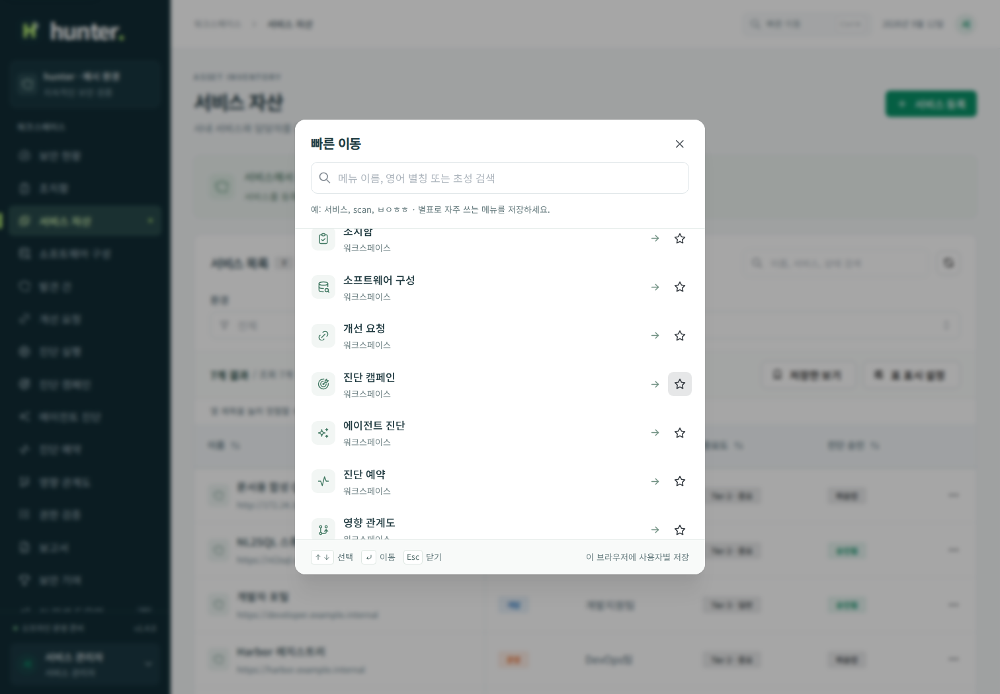
메뉴 옆 별표를 선택하면 즐겨찾기에 추가하고 다시 선택하면 해제합니다. 검색어가 없을 때 즐겨찾기와 최근 방문 메뉴를 먼저 표시합니다. 최근 방문은 같은 메뉴가 중복되지 않도록 최대 8개를 보관합니다. 메뉴 검색, 즐겨찾기와 최근 방문에는 현재 권한으로 접근할 수 있는 메뉴만 나타납니다.
즐겨찾기와 최근 방문은 현재 브라우저에 사용자별로 저장됩니다. 다른 브라우저나 기기로 자동 동기화되지 않으며 브라우저의 사이트 데이터를 지우면 초기화됩니다. 공용 PC에서는 사용 후 로그아웃하고 조직의 브라우저 데이터 관리 절차를 따릅니다.
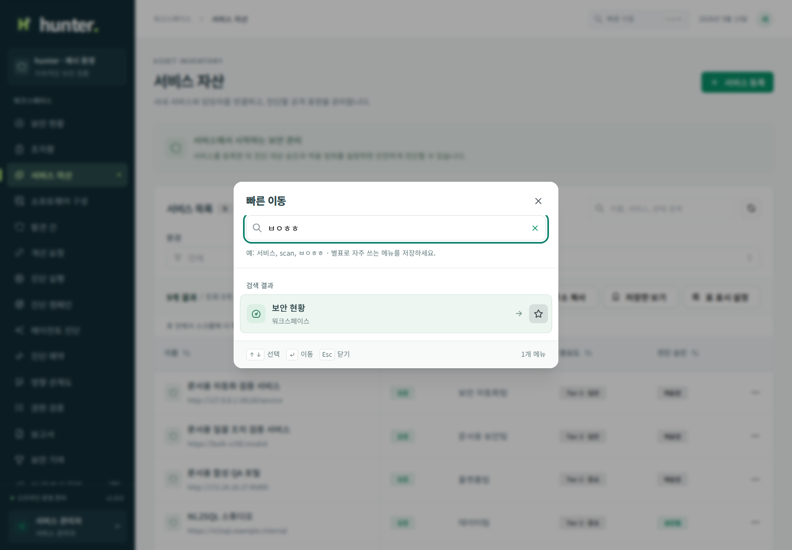
1.4 목록에서 항목 찾기
서비스·발견 건·진단·에이전트·사용자·개인 키·감사 기록 등의 목록은 검색, 필터, 정렬과 페이지 이동을 제공합니다. 적용할 수 있는 필터는 화면마다 다릅니다.
- 목록 검색창에 이름, 서비스, 조직이나 화면에 보이는 상태를 입력합니다. 예를 들어 발견 건에서
심각, 서비스에서운영을 검색할 수 있습니다. 띄어 쓴 여러 단어는 모두 포함하는 항목을 찾습니다. - 상태·심각도·환경·서비스 등의 필터로 범위를 좁힙니다. 검색어와 필터는 함께 적용됩니다.
- 표의 열 제목을 선택하면 오름차순, 다시 선택하면 내림차순으로 바뀝니다. 화살표로 현재 방향을 확인합니다. 숫자는 수치 순서로, 심각도는 위험 단계 순서로 정렬합니다.
- 목록 위에서 결과 수 / 조회 수를 확인합니다. 예를 들어
8개 결과 / 조회 37개는 현재 조회한 37개 중 조건에 맞는 항목이 8개라는 뜻입니다. 목록 아래에서는 현재 표시 범위를 확인하고 페이지를 이동합니다. 페이지당 표시 수는 10·25·50·100개 중 선택하며 기본값은 25개입니다. 페이지가 5개를 넘으면 이동할 페이지에 번호를 입력하고 이동을 선택해 바로 갈 수 있습니다. - 적용 중 영역의 조건을 선택하면 해당 검색어나 필터 하나만 해제합니다. 나머지 조건·정렬·표시 수는 유지됩니다. 전체 검색·필터·정렬·페이지·표시 수를 기본으로 돌리려면 조건 초기화를 선택합니다.
검색·필터·정렬·페이지·표시 수는 주소에 보존됩니다. 새로고침과 브라우저 뒤로·앞으로 이동에서도 해당 주소의 조건으로 돌아옵니다. 검색어를 입력할 때는 현재 방문 기록을 갱신하므로 글자 하나마다 뒤로가기 기록이 생기지는 않습니다. 검색·필터·정렬·표시 수를 변경하면 첫 페이지부터 확인합니다.
일반 목록의 이 기능은 서버에서 현재 조회한 자료 범위 안에서 동작합니다. 별도 조치함은 서버에서 검색·집계·페이지를 처리합니다. 화면의 페이지 이동이 서버의 전체 과거 이력을 추가 조회한다는 뜻은 아닙니다. 자료가 많다면 보고서 절의 조회 한도를 함께 확인합니다. 모바일에서는 목록 조건이 여러 줄로 배치되며 넓은 표 안을 좌우로 스크롤할 수 있습니다.
1.5 반복해서 쓰는 목록 보기
저장한 보기는 현재 검색어·필터·정렬·페이지당 표시 수를 이름과 함께 저장합니다. 예를 들어 운영 결제 서비스나 심각한 확인 건을 만들어 반복 조회에 사용할 수 있습니다.
- 원하는 목록 조건을 정한 뒤 저장한 보기를 엽니다.
- 보기 이름을 입력하고 현재 조건 저장을 선택합니다. 이름은 최대 60자이고 같은 이름은 중복으로 저장할 수 없습니다.
- 나중에 저장한 보기에서 이름을 선택하면 저장된 조건으로 1페이지부터 표시합니다. 특정 상세 항목과 이전 페이지 번호는 보기의 저장 대상이 아닙니다.
- 휴지통 버튼으로 필요 없는 보기를 삭제합니다. 보기 삭제는 실제 서비스나 발견 건을 삭제하지 않습니다.
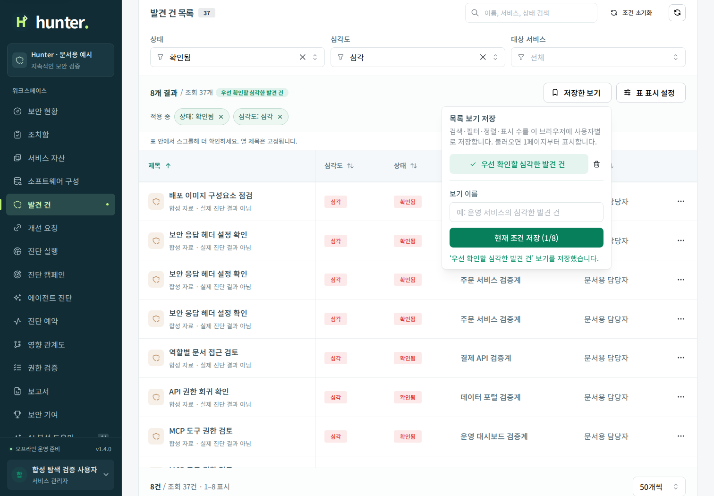
저장 보기는 이 브라우저에서 사용자·메뉴별로 최대 8개를 보관합니다. 발견 건에서 저장한 보기가 서비스 목록이나 다른 계정에 함께 나타나지 않습니다. 다른 브라우저·기기에 자동 동기화되지 않으며 사이트 데이터를 삭제하면 지워집니다. 브라우저 저장소를 사용할 수 없는 경우 안내가 나타나고 현재 화면에서만 적용됩니다.
적용한 저장 보기와 조건이 일치하면 결과 수 옆에 보기 이름이 나타납니다. 조건을 바꾸면 이름 표시가 사라지므로 저장본과 현재 조건을 구분할 수 있습니다. 조회는 항상 현재 계정의 권한 안에서 이루어집니다. 예전에 볼 수 있었던 서비스가 삭제되거나 권한에서 제외되면 같은 보기를 적용해도 결과가 달라질 수 있습니다.
1.6 긴 표 읽기와 키보드 이동
긴 표는 표 안에서 스크롤하며 읽습니다. 기본 보기에서는 세로로 이동해도 열 제목이 남습니다. 넓은 화면에서는 가로로 이동해도 첫 번째 이름·제목 열을 고정하며, 좁은 모바일 화면에서는 첫 열 고정을 해제해 다른 열을 읽을 공간을 확보합니다.
표 표시 설정 → 행 간격 → 촘촘하게를 선택하면 글자 크기를 유지하면서 행 여백을 줄입니다. 기본으로 돌아오면 여유 있는 간격을 사용합니다. 이 설정도 현재 브라우저의 사용자·메뉴별로 보관됩니다.
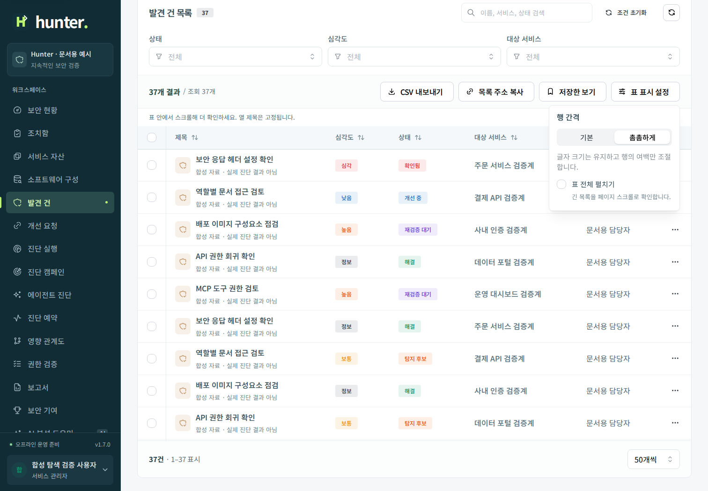
표 전체 펼치기를 켜면 표의 높이 제한을 없애 문서 전체를 스크롤합니다. 이 모드에서 문서를 세로로 이동할 때는 열 제목이 화면 상단에 고정되지 않습니다. 표 안 스크롤과 헤더 고정을 다시 사용하려면 해당 옵션을 끕니다.
키보드에서는 첫 Tab으로 본문 바로가기를 표시할 수 있습니다. 스크롤 가능한 표에 초점이 있으면 방향키로 이동하고, 열 제목의 버튼을 선택해 정렬합니다. 행에 초점이 있으면 Enter로 상세를 열 수 있습니다. 모바일 메뉴는 열린 동안 키보드 초점이 메뉴 안에 머물고 Esc로 닫으면 열기 버튼으로 돌아갑니다. 빠른 이동도 화살표·Enter·Esc를 지원합니다.
이는 제공하는 키보드 동작의 설명입니다. WCAG 인증이나 모든 보조기기 조합의 적합성을 의미하지 않습니다. 실제 검증 화면 크기와 범위는 검증 기록을 참고하세요.
1.7 권한을 이해하기
기능 사용 권한과 데이터 접근 범위는 함께 적용됩니다. 관리자는 전체 운영을 관리하며 팀장은 검토 업무를 수행할 수 있습니다. 일반 사용자는 자신에게 허용된 서비스와 관련 데이터를 사용합니다. 관리자 역할 설정에 따라 세부 권한은 바뀔 수 있습니다.
버튼이 없거나 접근이 거부되면 개인 API 키를 새로 만드는 것으로 권한을 늘릴 수 없습니다. 소유자 계정의 현재 권한과 키 자체에 지정한 권한의 교집합만 적용됩니다.
1.8 현재 목록 CSV와 주소 복사
일반 목록의 CSV 내보내기는 현재 검색·필터·정렬을 적용한 조회 자료 전체를 내보냅니다. 화면의 한 페이지로만 제한하지 않지만 서버가 처음 반환한 자료의 조회 상한은 그대로입니다. 보고서의 기존 전체 다운로드와 목록 버튼의 적용 조건은 구분하세요. 조치함의 현재 페이지 CSV는 화면에 표시된 서버 페이지의 항목만 내보냅니다.
CSV는 표에 지정된 표시 필드를 사용하며 비밀값·임의 객체 전체를 자동 포함하지 않습니다. 한국어와 줄바꿈을 보존하고 스프레드시트 수식으로 해석될 수 있는 시작 문자를 텍스트로 처리합니다. 내보낸 파일에는 업무 데이터가 있으므로 조직의 공유·보관 기준을 따릅니다.
목록 주소 복사는 현재 메뉴, 검색·필터·정렬·표시 수·페이지를 복사합니다. 지원하는 상세 비교 화면에서는 탭과 비교 기준도 포함합니다. 임의 주소 매개변수나 폼 내용은 복사 대상이 아닙니다. 발견 건·서비스 등 일반 상세에서는 ID 복사, 상세 링크 복사를 사용해 문의 대상을 전달할 수 있습니다. 링크를 받은 사람에게도 현재 조회 권한이 필요합니다. 복사가 거부되면 브라우저의 클립보드 권한과 안내를 확인하세요.
1.9 SBOM·캠페인의 탭별 조건
소프트웨어 목록의 SBOM 문서·구성요소 검색, 명세 상세의 구성요소·의존 관계·버전 비교, 캠페인 상세의 진단 실행·결과 비교는 검색·정렬·페이지를 탭별로 기억합니다. 다른 탭으로 이동해도 이전 탭의 조건으로 결과를 잘못 좁히지 않으며 돌아오거나 새로고침하면 그 탭의 조건을 복원합니다. 선택한 비교 기준과 구성요소도 해당 탭의 주소 상태로 구분합니다.
저장한 보기와 표 표시 설정도 이 화면에서는 사용자·경로·탭별로 분리합니다. 소프트웨어 목록의 상단 서비스는 두 목록에 공통 적용하며 저장한 보기에 포함됩니다. 이전 형식의 service= 주소도 열 수 있고 현재 형식인 f_service_id=로 정리됩니다. 상세를 확인한 뒤 목록으로 돌아가면 원래 조회 조건을 유지합니다.
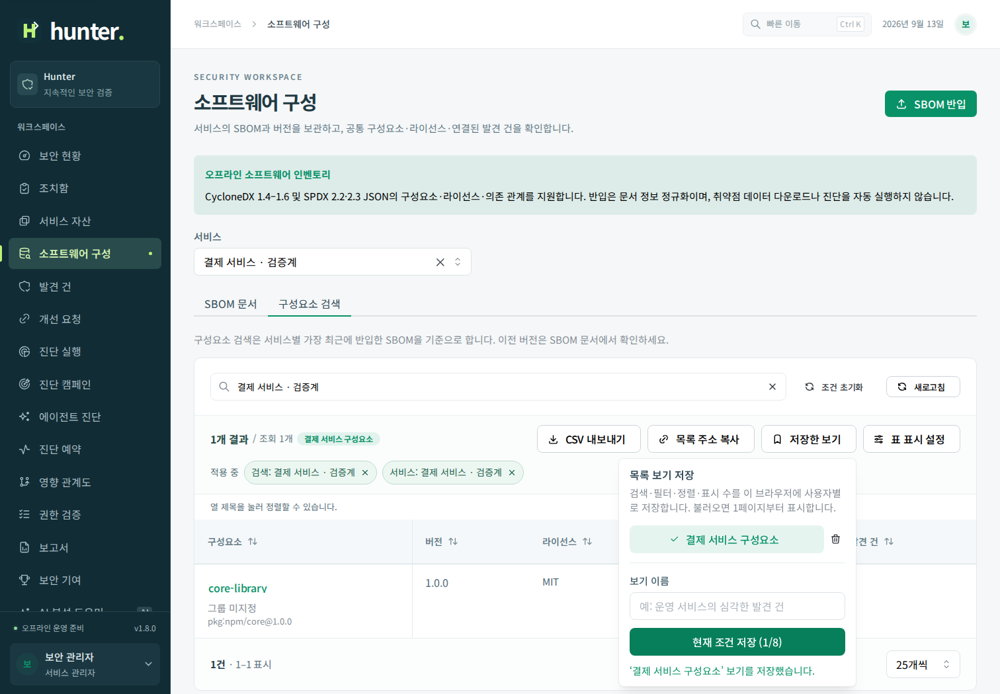
2. 보안 현황 읽기
보안 현황에서 등록 서비스, 열린 발견 건, 심각한 위험과 진단 이력을 확인합니다. 데이터가 없으면 빈 상태를 표시하며 임의 통계를 만들지 않습니다.
심각도와 서비스 중요도는 서로 다른 값입니다. 심각도는 개별 발견 건의 기술적 위험을, 중요도는 서비스의 업무상 우선순위를 나타냅니다. 두 값을 함께 보고 개선 우선순위를 결정하세요.

최근 발견 건에서는 제목, 대상 서비스, 심각도와 상태를 확인합니다. 최근 진단에서는 실제 실행 결과를 확인합니다. 단순히 진단이 완료되었다는 사실만으로 서비스 전체가 안전하다고 판단해서는 안 됩니다. 진단한 프로파일, 범위와 증거까지 확인합니다.
3. 서비스 자산 등록과 수정
- 서비스 자산 → 서비스 등록을 선택합니다.
- 서비스명과 대표 URL을 입력합니다. URL은 브라우저에서 접근하는 승인 대상 주소입니다.
- 개발계·검증계·운영계 중 환경을 선택하고 망 이름, 조직, 담당자를 입력합니다.
- Tier 1~4 중요도, 저장소 주소, 컨테이너 이미지와 설명을 작성합니다.
- 관련 공격 표면이 있다면 대상 목록에 등록합니다.
- 저장 후 관리자가 서비스 진단 승인과 유효한 허용 범위를 설정했는지 확인합니다.
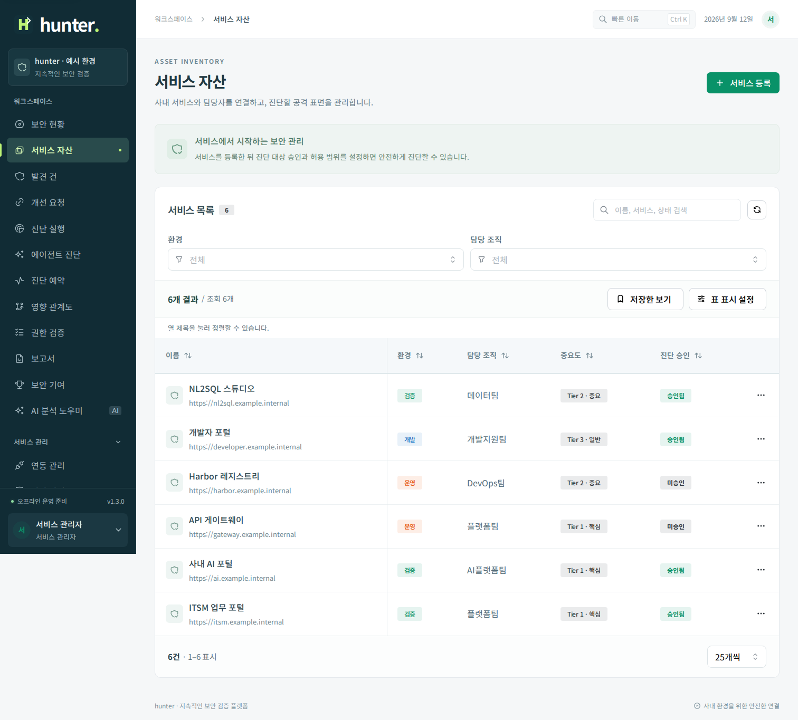
| 항목 | 입력 예시 | 의미 |
|---|---|---|
| 서비스명 | 주문 API 검증계 | 조직 안에서 쉽게 구별할 수 있는 이름 |
| URL | https://orders-stg.internal | 실제 네트워크 진단의 기준 주소 |
| 환경 | 검증계 | 운영 보호 정책과 권한 시나리오 사용에 영향 |
| 망 | 개발망 | 운영 담당자가 식별할 수 있는 네트워크 구분 |
| 조직·담당자 | 주문개발팀 · 담당자명 | 대응 책임과 업무 연결 정보 |
| 중요도 | Tier 2 | 조직 정책에 따른 업무 중요도 |
| 저장소 | 사내 Git 저장소 주소 | 소스와 서비스의 관계 |
| 이미지 | harbor.internal/orders:v2.3 | 배포 구성요소 식별 |
목록에서 항목을 선택하면 상세 패널이 열리고 선택한 항목이 주소에 보존됩니다. 새로고침해도 같은 상세를 다시 표시하며 이전 항목·다음 항목으로 현재 검색·필터·정렬 범위의 다른 항목을 확인할 수 있습니다. 패널을 닫아도 목록 조건은 유지됩니다. 행의 작업 메뉴에서 수정할 수 있습니다. 대표 URL, 환경, 망, 조직·담당자, 중요도와 관련 대상을 변경하면 기존 서비스 진단 승인이 해제되므로 관리자가 다시 확인해야 합니다. 자동발견으로 들어온 항목 역시 승인 전에는 진단 대상이 되지 않습니다.
3.1 입력 오류가 표시될 때
저장에 실패하면 폼 안에 오류 안내가 남고 입력한 내용을 유지합니다. 안내를 확인해 수정한 뒤 다시 시도하세요. 개인 프로필이나 관리자 설정에서 필수값·형식 오류가 여러 개라면 상단 요약의 항목을 선택해 해당 입력으로 이동할 수 있습니다. 모든 서버 오류에 입력 항목별 링크가 제공되는 것은 아닙니다.
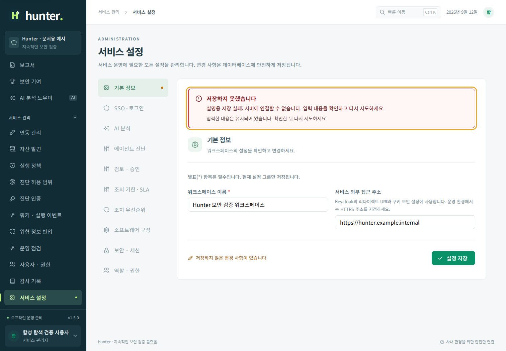
일반 자원 등록·수정 폼에서 내용을 바꾼 뒤 닫으면 작성 중인 내용을 닫을까요? 안내가 나타납니다. 계속 작성으로 돌아가거나 입력 버리고 닫기로 명시적으로 폐기합니다. 저장 중에는 반복 제출과 닫기를 제한합니다. 이 보호가 모든 일반 메뉴 이동의 자동 초안 저장을 뜻하지는 않습니다. 다른 업무 페이지로 떠나기 전 작성 내용을 저장하세요.
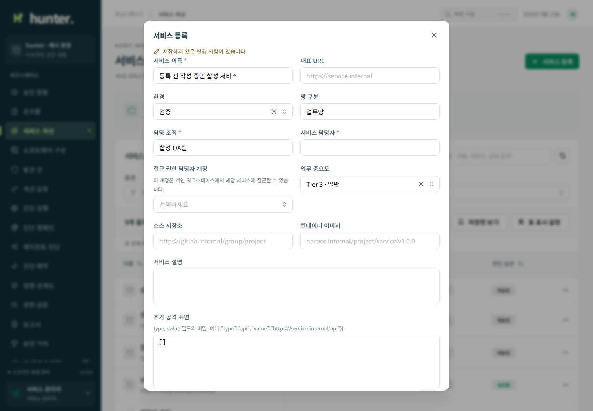
다른 사용자가 같은 일반 자원을 먼저 수정하면 저장 시 충돌 안내가 표시되고 내 입력을 유지합니다. 최신 자료 확인에서 마지막 변경 정보를 검토한 뒤 입력 유지 또는 최신 자료로 다시 작성을 선택합니다. 후자는 현재 초안을 최신 자료로 교체하므로 필요한 내용을 별도로 확인하세요. 화면이 자동으로 다른 사람의 변경을 덮어쓰지 않습니다. 관리자 설정·사용자·개인 프로필·워커의 별도 저장 경로까지 같은 충돌 보호를 적용한다고 해석하지 않습니다.
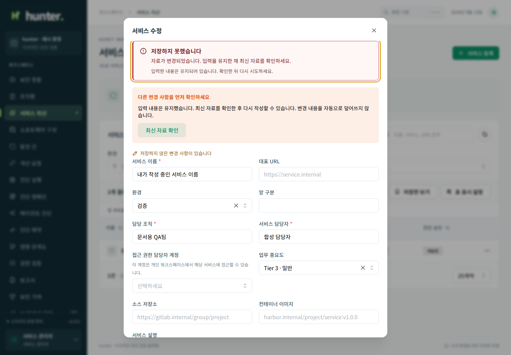
관리자 설정 그룹을 이동할 때는 별도의 미저장 안내를 제공하며, 자세한 동작은 관리자 가이드를 참고하세요.
3.2 소프트웨어 명세와 구성요소
소프트웨어 구성(/software)는 서비스가 어떤 라이브러리와 패키지로 이루어졌는지 기록합니다. 사내 빌드 도구에서 만든 CycloneDX 1.4·1.5·1.6 JSON 또는 SPDX 2.2·2.3 JSON을 사용합니다. Hunter가 저장소를 내려받거나 SBOM을 자동 생성하는 기능은 아닙니다.
- SBOM 반입을 선택하고 접근 가능한 서비스를 고릅니다.
- 문서 이름 · 배포 버전에
결제 서비스 2.4.0처럼 구분 가능한 이름을 입력합니다. UTF-8 기준 최대 200바이트이며 한글은 보통 글자당 3바이트입니다. 현재 바이트 수와 초과 안내를 표시하고 초과하면 전송 전에 수정하도록 안내합니다. 이름을 비우면 서비스명에 기반한 기본 이름을 사용합니다. - JSON 파일을 선택한 뒤 반입합니다. 문서 본문은 8 MiB 이하, 구성요소는 문서당 1~10,000개입니다. 입력 의존 관계는 미등록 참조를 포함해 100,000개 이하입니다. 빈 문서는 반입하지 않으며 실패해도 이전 최신 명세를 유지합니다.
- 완료된 문서를 열어 구성요소 수, 의존 관계 수, 형식·버전, SHA-256과 주의 메시지를 확인합니다.
- 같은 서비스에 같은 JSON 바이트를 다시 반입하면 기존 문서를 반환하므로 중복 문서가 만들어지지 않습니다. 다른 배포본은 새 문서로 보관합니다.
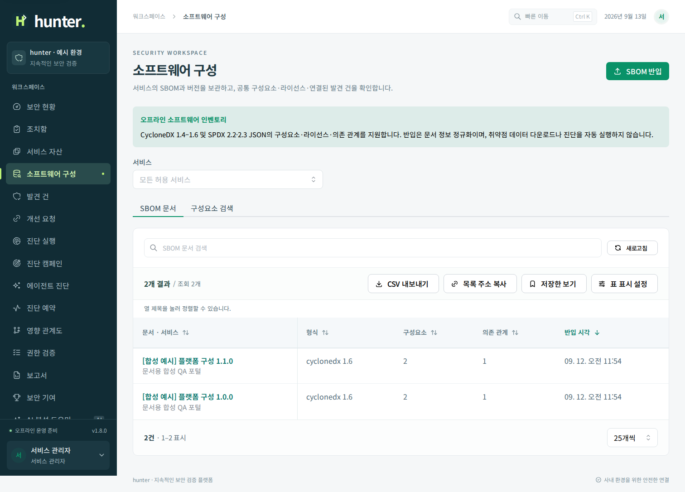
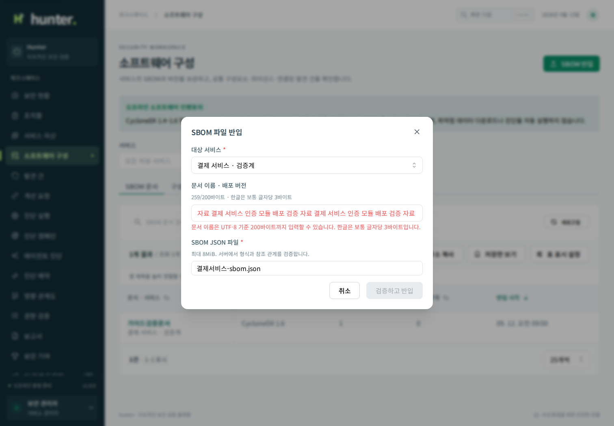
문서 상세에는 패키지 이름, 버전, purl, 선언된 라이선스와 연결된 발견 건이 표시됩니다. 임의의 공급자 속성·내장 파일·실행 코드를 보관하거나 실행하지 않습니다. 일부 의존 관계 참조에 문제가 있으면 문서에 표시된 주의 사항을 확인합니다. 지원 필드와 배열의 타입, purl 기본 구조·버전 일치·인코딩 등을 검사하며 전체 표준 스키마를 완전히 검증하는 도구는 아닙니다.
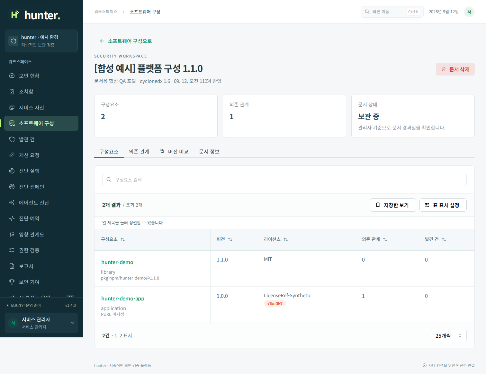
구성요소 검색 탭은 서비스별 최신 반입본에서 같은 구성요소를 모아 사용하는 서비스를 보여줍니다. 검색어로 패키지, 버전, 라이선스나 서비스명을 찾습니다. 영향 서비스에는 현재 열람 가능한 서비스만 나타납니다. 발견 건 연결은 같은 서비스의 component가 purl 또는 이름@버전과 정확히 일치하는 경우를 사용하며 findings:read 권한도 필요합니다. 같은 이름·버전이 서로 다른 purl이나 구성요소 식별자를 가리키면 이름@버전 연결도 하지 않습니다. 이름이 비슷하다는 이유로 취약점을 추정하지 않습니다.
버전 비교에서는 같은 서비스의 기준 문서를 선택해 추가·제거·변경된 구성요소를 확인합니다. 단일 구성요소의 버전·라이선스 변화와 동일 식별자에 여러 버전이 있는 경우를 구분합니다. 같은 패키지·버전이라도 라이선스가 다르면 별도 행으로 보존하고, 문서의 bom-ref만 달라진 것은 메타데이터 변경으로 세지 않습니다. 여러 버전이 함께 바뀌면 임의의 업그레이드 쌍을 만들지 않고 추가·제거로 표시합니다. SBOM에서 패키지가 제거되었다고 관련 발견 건이 자동 해결되지는 않습니다.
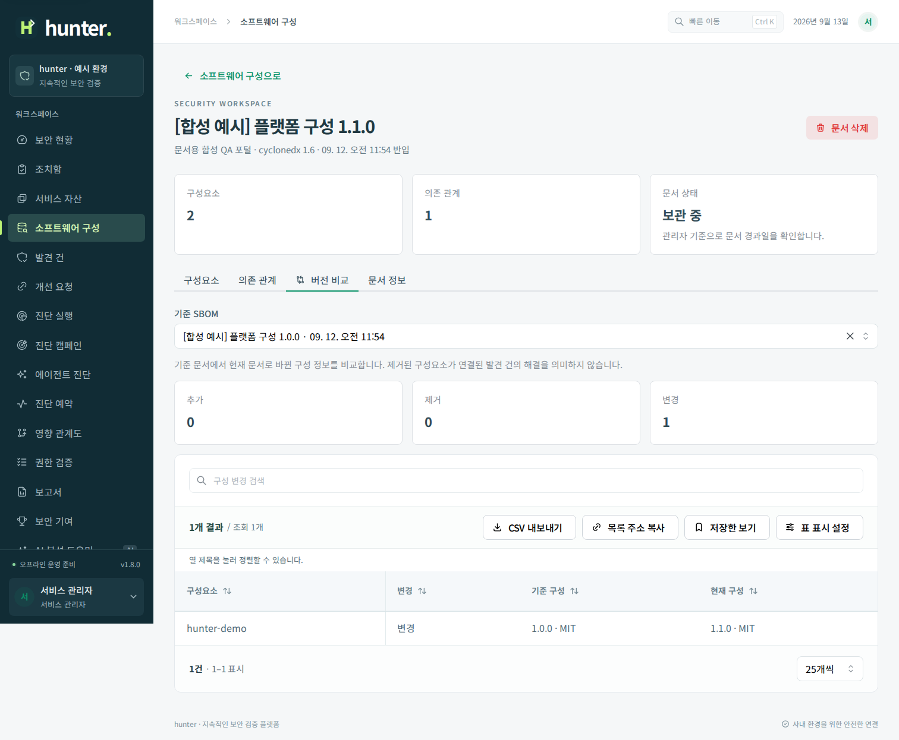
라이선스의 검토 필요는 관리자 지정 목록, 선언 정보 없음, NOASSERTION·NONE, 사용자 정의 LicenseRef- 또는 복합 표현식 등에 표시됩니다. 나머지 항목도 원본 라이선스와 배포 방식을 검토해야 하며, 이 표시가 허용·적법성을 확정하지 않습니다. SHA-256은 제출한 JSON을 구분하는 값이며 공급자 서명을 검증했다는 뜻은 아닙니다.
4. 발견 건 관리
4.1 직접 등록
발견 건 → 발견 건 등록에서 대상 서비스, 제목, 심각도, 재현 조건, 증거와 개선안을 작성합니다. 비밀번호, API 키, 세션 쿠키와 고객 개인정보 원문을 증거에 붙여 넣지 마세요. 합성 테스트 식별자와 마스킹된 필요한 부분을 사용합니다.
좋은 등록 예시는 다음 정보를 포함합니다.
- 어느 서비스와 환경, 경로에서 관찰했는지
- 정상적으로 기대한 동작과 실제 동작의 차이
- 사용한 테스트 역할과 합성 데이터
- 재현에 필요한 최소 단계 및 관련 진단 번호
- 영향 범위와 확인하지 못한 부분
- 개선 담당자, 목표 기한과 제안한 수정 방향
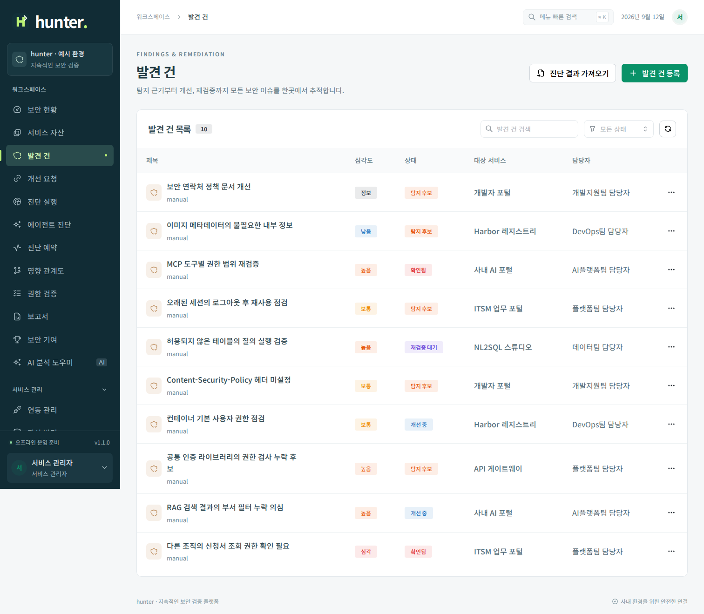
4.2 상태를 올바르게 사용하기
| 화면 상태 | API 값 | 사용 기준 |
|---|---|---|
| 탐지 후보 | candidate | 도구 또는 사람이 발견했지만 확인이 끝나지 않음 |
| 확인됨 | confirmed | 정의된 근거와 검증 조건을 충족 |
| 개선 중 | in_progress | 담당자가 실제 수정을 진행 |
| 재검증 대기 | retest | 수정 반영 후 같은 조건의 확인을 기다림 |
| 해결 | resolved | 지원되는 재검증이 정상 완료되고 기존 문제가 해소됨 |
| 판단 불가 | inconclusive | 인증 실패, 응답 오류, 시간 초과 또는 검증 범위 부족 |
| 오탐 | false_positive | 적용 조건을 확인하여 오탐 사유를 기록 |
| 위험 수용 | accepted | 수용 사유와 유효한 만료 일시를 명시 |
해결 상태는 일반 수정으로 지정할 수 없습니다. 재검증에 성공한 실제 검사 결과가 필요합니다. 모든 외부 도구 결과를 자동 종결하는 범용 엔진은 제공하지 않습니다. 지원되는 헤더 재검증 범위를 넘어서는 항목은 증거를 보완하고 별도 검토 절차로 관리합니다.
오탐이나 위험 수용에는 사유가 필요합니다. 위험 수용에는 만료 일시도 입력합니다. 수용 기간이 끝나면 대시보드는 즉시 열린 위험으로 집계하고, 분 단위 유지보수 작업이 탐지 후보로 전환하여 재검토 대상으로 되돌립니다. 이 전환은 감사 기록에 남습니다. 관리자가 검토 프로세스를 켠 경우 팀장 또는 관리자가 해당 결정을 수행합니다.
4.3 외부 진단 결과 가져오기
발견 건 → 진단 결과 가져오기에서 서비스와 형식을 선택한 다음 파일 또는 JSON을 입력합니다.
| 형식 | 사용 대상 |
|---|---|
| generic | Hunter 형식의 발견 건 목록 |
| trivy | Trivy JSON 결과 |
| nuclei | Nuclei JSON 배열 또는 UI에서 읽는 JSONL |
| zap | ZAP JSON 보고서 |
| sarif | SARIF 2.1 결과, 예: Semgrep 결과 |
| gitleaks | Gitleaks JSON 보고서 |
가져오기는 이미 수행한 진단 결과의 수입입니다. Hunter 이미지 안에서 해당 외부 도구가 실행되는 것은 아닙니다. 동일한 식별 기준의 결과는 반복 관찰로 연결되며, 공통 원인 후보를 근거 없이 서로 다른 서비스의 발견 건으로 합치지 않습니다. 최초 가져온 후 표의 건수, 서비스 연결과 증거를 확인합니다.
4.4 개선 요청과 외부 발송
개선 요청에서 발견 건을 선택하고 개선 내용과 코드·설정 변경안을 작성합니다. 관리자가 준비한 발송용 REST 연동을 선택하면 사내 ITSM 티켓이나 개발 플랫폼의 PR API로 명시적으로 보낼 수 있습니다.
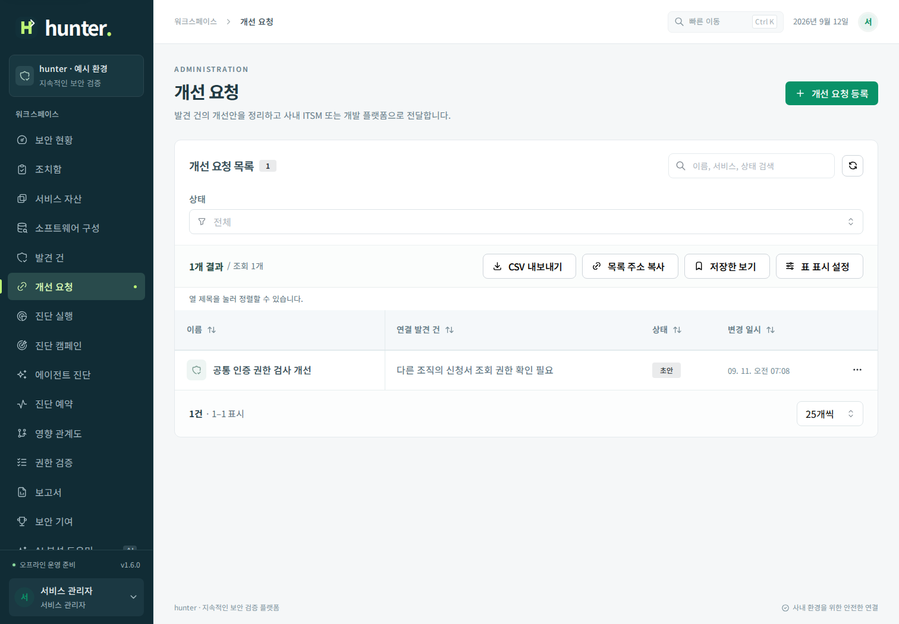
발송 후 외부 식별자와 주소를 확인합니다. 전송 결과가 불확실한 경우 자동 재시도하지 않으므로 외부 시스템에서 생성 여부를 먼저 확인합니다. 자동으로 코드를 병합하거나 운영 배포를 진행하지 않습니다.
4.5 조치함에서 우선순위와 기한 확인
조치함(/triage)은 현재 접근 가능한 미조치 발견 건을 위험 우선순위 순으로 보여줍니다. 해결, 오탐, 아직 만료되지 않은 위험 수용은 기본 조치 대상에서 제외합니다. 위험 수용 기간이 끝난 건은 유지보수 작업이 상태를 갱신하기 전에도 다시 조치 대상에 포함됩니다.
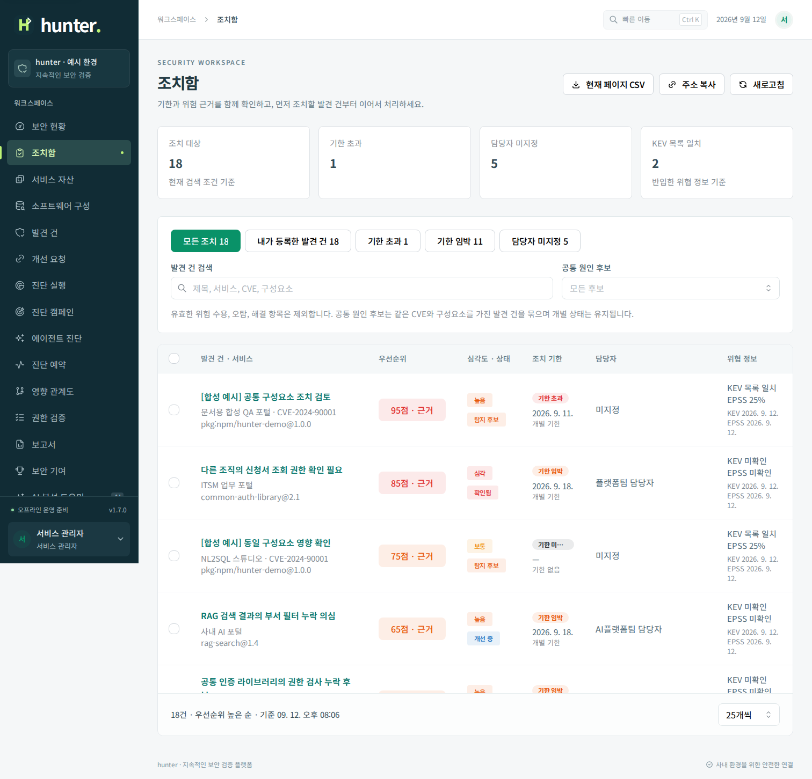
- 모든 조치, 내가 등록한 발견 건, 기한 초과, 기한 임박, 담당자 미지정 보기 중 필요한 범위를 고릅니다. 내가 등록한 발견 건은 발견 건 등록자 기준이며 자유 입력 담당자 이름과 자동 매칭하는 기능은 아닙니다.
- 검색창으로 발견 제목, CVE, 구성요소, 담당자, 서비스나 조직을 찾습니다. 조치함의 검색·보기·공통 원인 후보 조건과 페이지는 주소에 남습니다.
- 우선순위의 점수 · 근거를 열어 기술적 심각도, 서비스 중요도와 KEV·EPSS 신호가 점수에 어떻게 반영됐는지 확인합니다.
- 조치 기한과
기한 초과,기한 임박,기한 내,기한 미설정상태를 확인합니다. 담당자와 조치 계획을 구체화한 뒤 발견 건을 열어 수정합니다. - 페이지를 이동해 후속 조치 대상을 확인합니다. 조치함은 서버가 현재 접근 범위에서 검색·집계·페이지를 처리하며 기존 일반 목록의 최신 5,000건 한도를 그대로 적용하지 않습니다.
수동 조치 기한이 있으면 우선 사용합니다. 수동 기한이 없고 관리자가 SLA를 켰다면 발견 건 생성 시각에 심각도별 설정 일수를 더합니다. SLA 정책을 바꾸면 계산 기한도 달라지지만 수동 기한은 덮어쓰지 않습니다. 같은 스캔 결과의 재반입만으로 생성 시각과 기한이 연장되지 않습니다.
운영 점수는 기술적 심각도나 발견 상태를 변경하지 않습니다. 현재 방식은 심각도 기본 점수에 서비스 중요도, KEV와 유효한 EPSS 가산점을 더해 최대 100점으로 표시합니다. 점수는 사내 업무 우선순위이며 침해 확률이나 CVSS 점수가 아닙니다.
KEV 표시는 반입된 목록의 포함 여부입니다. 목록에 없다는 사실이 악용 사례가 없음을 보장하지 않습니다. EPSS가 없으면 정보 없음으로 표시하며 0점과 구분합니다. 자료가 오래되면 기준일을 확인하세요. 오래된 EPSS는 점수 가산에서 제외되고, KEV의 과거 악용 사실은 오래되어도 가산 근거로 유지됩니다.
4.6 댓글·활동 이력과 공통 원인 후보
조치함에서 발견 건의 활동을 열어 의견과 조치 정보를 남깁니다. 댓글 작성 시 서버가 작성자와 시각을 정하고, 내용은 민감정보 마스킹 후 암호화해 보관합니다. 비밀번호·토큰 원문은 댓글에 넣지 않습니다.
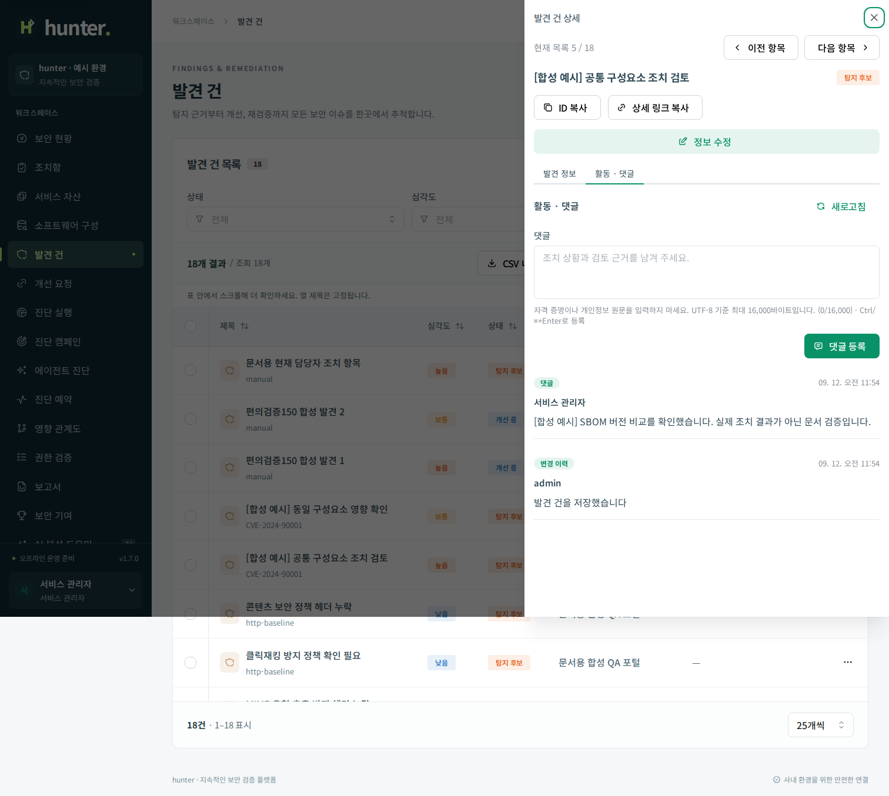
활동 기록은 댓글, 발견 건 저장·위험 수용 만료의 감사 사건, 최근 최대 100개 관찰과 현재 재검증 정보를 함께 보여줍니다. 모든 필드의 변경 전후 차이를 영구 보관하는 기록은 아닙니다. 작성 실패가 표시되면 의견이 저장됐는지 다시 확인한 뒤 재시도합니다. 같은 발견 건의 탭을 바꿀 때 작성 중인 댓글은 화면 메모리에 유지합니다. 상세를 닫거나 이전·다음 발견 건으로 옮길 때는 계속 작성하거나 댓글을 버릴지 안내합니다. 등록 전 내용은 서버나 브라우저 장기 저장소에 자동 저장되지 않으며 다른 업무 메뉴로 떠나기 전 직접 등록하세요.
공통 원인 후보는 유효한 같은 CVE와 정확히 같은 구성요소 문자열을 가진 미조치 발견 건이 둘 이상일 때 모아 보여줍니다. 후보는 연결된 서비스의 개선 작업을 함께 검토하는 자료이며 자동 병합이나 원인 확정이 아닙니다. 서비스별 증거·상태·기한·재검증은 유지됩니다. 후보 집계는 현재 검색과 접근 범위 안에서 계산하고 최대 100개 그룹을 표시합니다.
4.7 발견 건 일괄 변경
발견 건 목록과 조치함에서 현재 페이지의 항목을 선택하고 선택 항목 일괄 변경을 엽니다. 최대 100개를 선택하며 조회 조건·페이지가 바뀌면 선택을 다시 확인합니다.
- 펼침 영역에서 선택한 발견 건과 현재 상태를 확인합니다.
- 담당자 변경, 조치 기한 변경, 진행 상태 변경 중 실제 바꿀 항목만 체크합니다. 체크하지 않은 값은 그대로 유지합니다.
- 담당자는 내 이름 입력으로 채우거나 빈 값으로 지정을 해제할 수 있습니다. 이 입력은 사용자 권한을 변경하지 않습니다.
- 직접 지정 기한 해제를 선택하면 개별 기한을 없앱니다. 관리자가 SLA를 켰다면 계산 기한이 대신 적용됩니다.
- 상태는 탐지 후보·확인됨·개선 중·재검증 대기·판단 불가만 선택할 수 있습니다. 해결·오탐·위험 수용 또는 해당 상태의 재개는 개별 발견 건에서 검토합니다.
- 적용 시 현재 권한과 각 항목의 조회 버전을 다시 검사합니다. 하나라도 권한이 달라졌거나 수정 충돌이 있으면 전체 변경을 취소합니다. 충돌 시 선택 해제하고 최신 목록 새로고침으로 돌아가 다시 선택하세요.
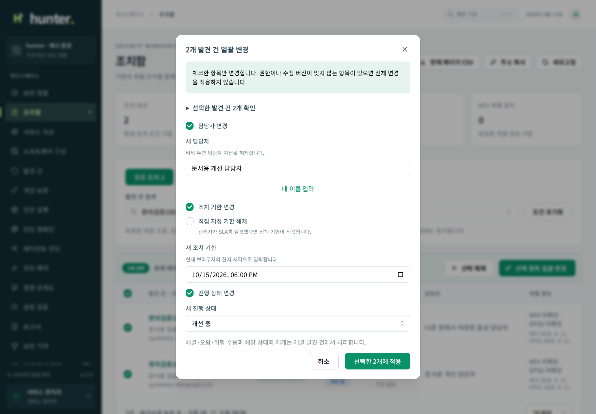
일괄 변경은 진단 실행·자동 해결·보상 처리가 아닙니다. 여러 발견 건의 증거와 재검증 이력은 각각 유지합니다.
5. 진단 요청부터 재검증까지
5.1 진단 전에 확인할 항목
네트워크 진단에는 관리자에게 승인받은 서비스와 유효한 진단 허용 범위가 필요합니다. 허용 호스트·경로가 요청 대상과 일치해야 하고 만료 시각이 지나지 않아야 합니다. 관리자가 팀장 검토를 꺼도 이 조건은 유지됩니다.
5.2 진단 요청
- 진단 작업 → 진단 실행을 선택합니다.
- 서비스를 선택하고 프로파일을 선택합니다.
- 승인된 허용 범위를 선택합니다.
- 권한 검증 프로파일이면 연결된 시나리오를 선택합니다.
- 진단 요청 후 작업 목록에서 상태와 결과를 확인합니다.
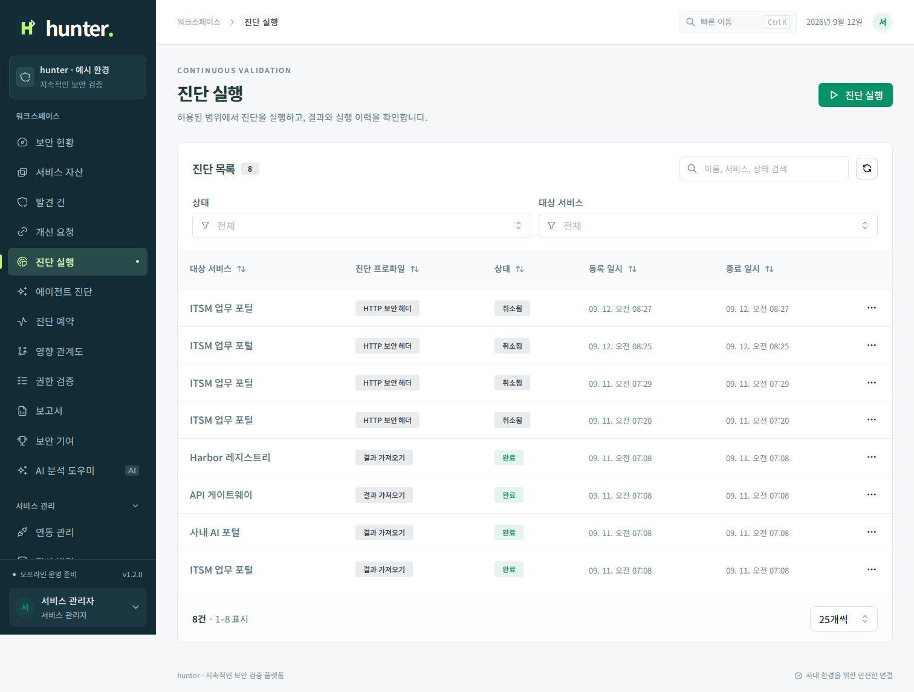
| 프로파일 | 실행 내용 | 사용 시 주의 |
|---|---|---|
| HTTP 기본 진단 | 승인 주소에 제한된 요청을 보내 보안 헤더 점검 | 웹 전체 취약점 진단이나 브라우저 크롤링이 아님 |
| 업무 권한 검증 | 두 인증 프로파일로 동일 합성 데이터 접근을 비교 | 개발계·검증계의 읽기 전용 GET에 한정 |
| 결과 수입 전용 | 외부 도구 결과 연결을 위한 구분 | 네트워크 진단 엔진을 실행하지 않음 |
대기 중이면 워커 상태와 팀장 승인 여부를 확인합니다. 판단 불가나 실패가 발생하면 상세 결과에 나온 원인을 해결한 후 새로 요청합니다. 실행 중인 작업은 작업 메뉴에서 취소할 수 있습니다. 권한이 있는 관리자는 전체 긴급 중지도 사용할 수 있습니다.
5.3 재검증
발견 건의 수정을 반영하고 상태를 재검증 대기로 정리합니다. 관련 발견 건 식별자를 포함한 재진단은 API에서도 요청할 수 있습니다. 실제 검사 범위와 인증이 성공한 경우만 종결 판단에 사용할 수 있습니다.
POST /api/scans
{
"service_id": "서비스 식별자",
"profile": "http-baseline",
"scope_id": "허용 범위 식별자",
"finding_id": "발견 건 식별자"
}
외부 도구 결과는 새 결과 수입으로 관찰 이력을 보완합니다. 결과 파일에서 항목이 사라졌다는 이유만으로 기존 발견 건을 해결로 단정하지 않습니다.
5.4 주기적 진단 예약
진단 예약 → 진단 예약 등록에서 서비스, 프로파일, 허용 범위, 실행 간격과 첫 실행 일시를 선택합니다. 실행 간격은 5~10,080분(7일)이며 사용하지 않을 때 예약 활성화를 끕니다.
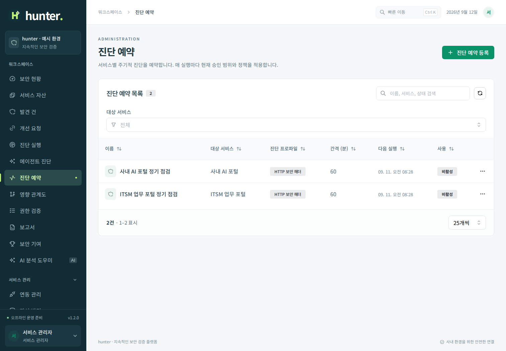
예약을 만든 시점의 승인으로 영구 실행하지 않습니다. 매 실행마다 소유자 권한, 범위 만료, 서비스 승인과 현재 정책을 다시 확인합니다. API 키로 만든 예약은 해당 키의 만료·폐기와 현재 권한도 적용합니다. 장애로 놓친 과거 실행을 대량으로 따라 실행하지 않습니다.
5.5 여러 서비스를 진단 캠페인으로 검증
진단 캠페인(/campaigns)은 배포나 점검 목적에 맞춰 여러 서비스의 기존 진단을 묶습니다. 새로운 스캐너를 실행하거나 승인 범위를 확대하지 않습니다.
- 새 캠페인에서 이름과 목적 · 배포 정보를 입력합니다.
- 대상 서비스와 프로파일을 추가합니다. 같은 서비스·프로파일·권한 시나리오 조합은 한 번만 등록하며 캠페인당 최대 20개입니다.
- HTTP·권한 진단에는 유효한 허용 범위가 필요합니다. 범위를 선택하지 않으면 현재 유효한 승인 범위를 자동 선택합니다. 권한 진단은 해당 서비스의 시나리오도 지정합니다.
- 캠페인을 저장하면 초안이 만들어집니다. 내용과 대상을 확인한 뒤 캠페인 시작을 선택합니다.
- 하나의 대상이라도 검증 또는 저장에 실패하면 전체 시작이 취소됩니다. 일부 대상만 몰래 시작하지 않으며, 문제를 수정하고 다시 시작할 수 있습니다.
- 시작된 캠페인은 연결된 진단의 실제 상태를 보여줍니다. 승인이 켜졌다면 개별 진단의 승인을 기다리고, 해당 망에 연결된 워커가 처리합니다. 결과 수입 프로파일은 외부 파일을 반입할 때까지 대기합니다.
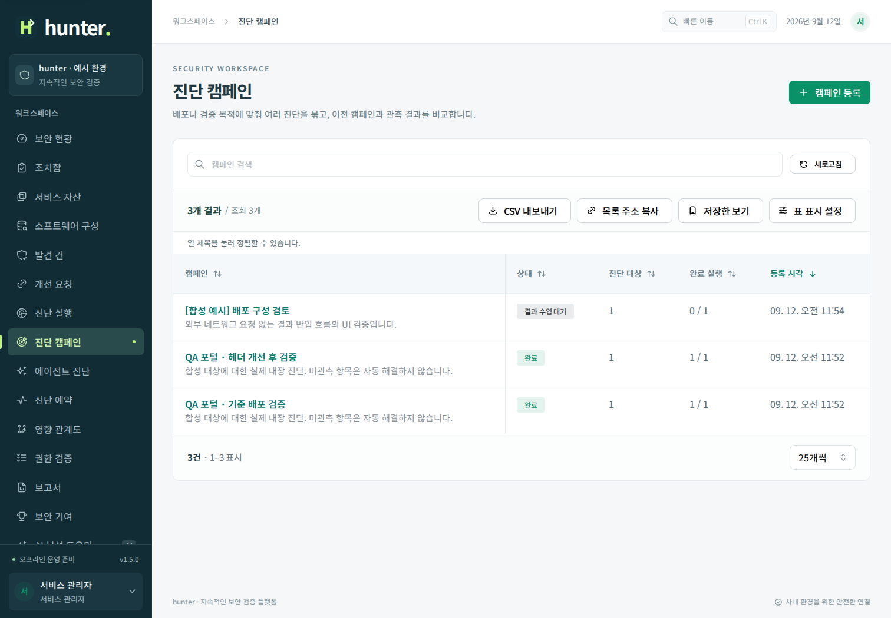
같은 캠페인의 시작 요청은 멱등적입니다. 버튼을 다시 누르거나 응답을 잃고 API를 재요청해도 기존 진단을 반환합니다. 같은 대상을 다시 검사하려면 같은 대상으로 새 캠페인을 선택하세요. 현재 대상 접근 권한을 다시 확인한 뒤 기존 이름·목적·대상을 복사한 입력 폼을 엽니다. 새 배포명과 허용 범위를 검토하고 등록하면 별도의 초안이 만들어집니다. 등록만으로 실행하지 않으며 새 상세에서 캠페인 시작을 선택해야 합니다. 기존 진단·결과는 복사하거나 다시 실행하지 않습니다. 실행 취소는 연결된 개별 진단 화면에서 처리합니다.
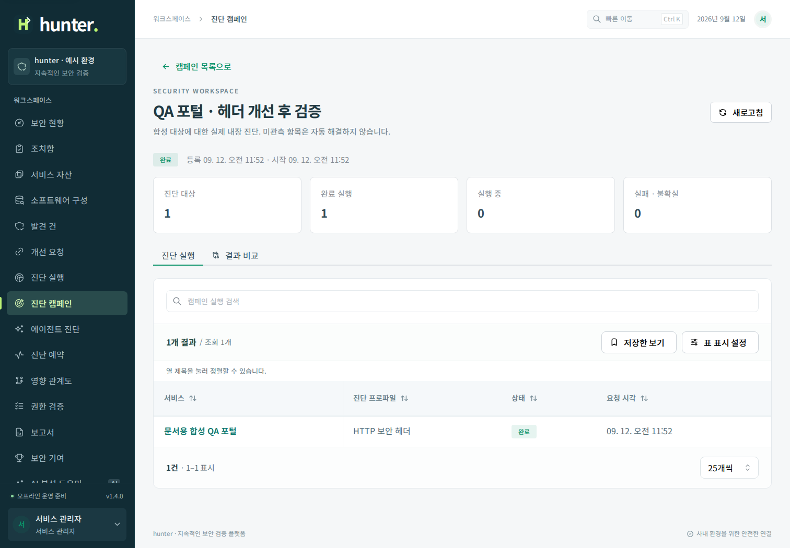
캠페인을 조회·생성·시작할 때마다 모든 대상 서비스의 현재 접근 권한을 확인합니다. 한 대상의 권한을 잃으면 캠페인 전체가 목록과 상세에서 숨겨질 수 있습니다. 캠페인 작성자였다는 이유로 이전 서비스 접근 권한이 유지되지 않습니다.
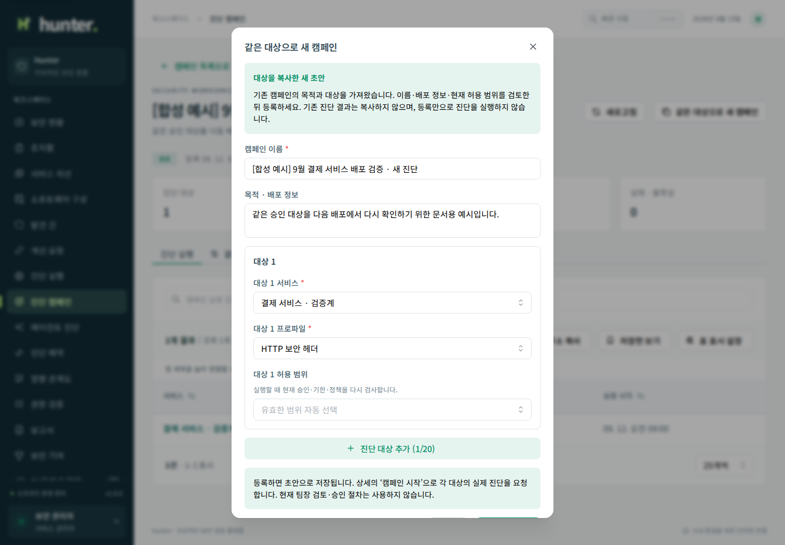
5.6 캠페인 결과 비교와 미관측 해석
상세의 결과 비교에서 기준 캠페인을 선택합니다. 비교에는 services:read, scans:read, findings:read 권한이 모두 필요합니다.
비교가 가능하려면 양쪽의 모든 대상 진단이 정상 완료되고, 서비스·프로파일·시나리오 구성이 같아야 합니다. 실행 당시 서비스·범위·정책·인증·신뢰 CA 조건과 엔진 버전도 일치해야 합니다. 내장 HTTP·권한 진단의 실행별 관측 집합을 사용하며, 이후 발견 건 제목·상태를 수정해도 과거 관측이 바뀌지 않습니다.
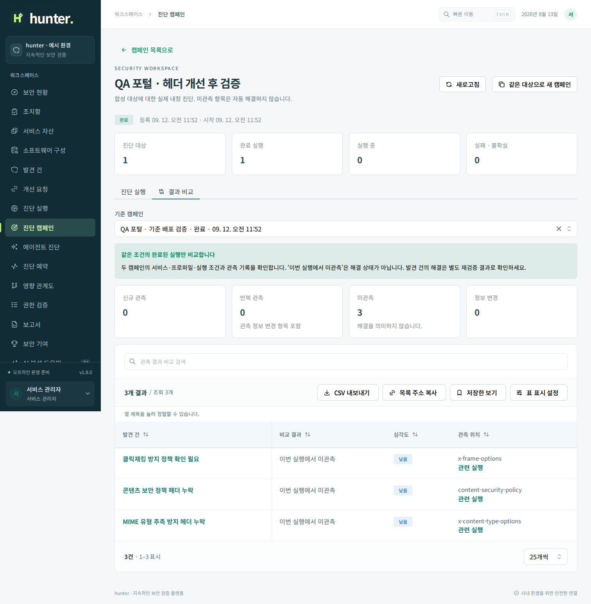
| 비교 결과 | 의미 | 다음 행동 |
|---|---|---|
| 신규 관측 | 기준 결과에 없고 이번 결과에 있음 | 적용 조건·증거와 우선순위 확인 |
| 반복 관측 | 양쪽 실행에서 같은 fingerprint를 관측 | 조치 진행 상황 확인 |
| 정보 변경 | 반복 관측 중 심각도·제목 메타데이터 등이 달라짐 | 변경 근거 검토. 반복 관측 집계에도 포함됨 |
| 미관측 | 기준 결과에는 있으나 이번 결과에는 없음 | 조치 반영 여부를 검토하고 지원되는 재검증 수행 |
| 비교 불가 | 미완료·실패·조건 불일치·관측 기록 미지원 | 표시된 사유를 확인하고 같은 조건의 새 캠페인 수행 |
미관측은 해결이 아닙니다. 비교는 발견 건 상태를 변경하지 않습니다. 해결은 기존의 검증 가능한 재검증 절차에서만 확정합니다. 취소·인증 실패·판단 불가 결과가 빈 결과처럼 처리되지 않습니다.
v1.4 이전 실행과 외부 스캐너 파일을 수입한 import-only 실행은 신뢰할 실행 조건·검사 완전성 근거가 없어 비교 불가로 표시됩니다. 외부 반입 결과는 발견 건과 관찰 이력에서 계속 확인할 수 있습니다.
6. 관계 그래프
관계 그래프는 서비스와 등록된 공격 표면, 구성요소 및 발견 건의 관계를 보여줍니다. 공통 구성요소를 사용하는 서비스와 관련 발견 건을 탐색할 때 활용합니다.
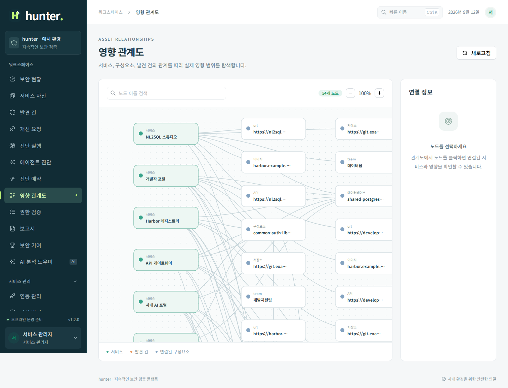
그래프는 Hunter에 등록되거나 수입된 데이터로 구성됩니다. 도달 가능한 모든 사내 호스트를 무단 탐색하여 만드는 그래프가 아닙니다. 관계가 빠졌다면 서비스의 저장소·이미지·대상 목록과 발견 건의 CVE·구성요소 정보를 보완합니다.
7. 업무 권한 검증 시나리오
권한 검증은 기대 권한을 담당자가 정의한 합성 데이터 테스트입니다. 정상 접근을 먼저 확인한 뒤 다른 역할의 노출 여부를 비교합니다.
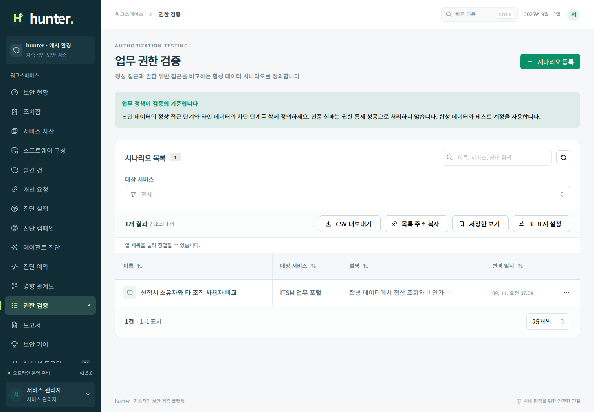
- 개발계 또는 검증계에 합성 데이터 한 건을 준비합니다. 예:
HUNTER_TEST_ORDER_001. - 이 데이터에 접근 가능한 계정과 접근하면 안 되는 별도 계정을 준비합니다.
- 관리자에게 같은 서비스의 인증 프로파일 두 개 등록을 요청합니다.
- 시나리오에 서비스, 읽기 전용 경로, 정상 프로파일, 비교 프로파일과 합성 식별 문자열을 입력합니다. 비교 계정이 자기 합성 데이터를 정상 조회하는 기준 경로와 기준 식별 문자열도 입력합니다.
- 해당 경로가 허용 범위 안에 있는지 확인하고 업무 권한 검증 진단을 요청합니다.
- 정상 계정의 성공과 합성 문자열 확인, 비교 계정의 응답 및 노출 여부를 함께 확인합니다.
검증은 정상 역할의 대상 조회, 비교 역할의 자기 데이터 조회, 비교 역할의 비공개 대상 조회 순서로 총 3회 GET을 수행합니다. 정상 계정이 합성 데이터를 읽지 못하거나 비교 계정의 자기 데이터 조회가 실패하면 인가 검증 성공으로 보지 않습니다. 비교 계정이 401로 인증에 실패한 경우도 판단 불가입니다. 두 계정의 인증 상태를 먼저 수정합니다. 실제 고객 데이터, 결제·삭제·승인·발송 같은 상태 변경 시나리오는 사용하지 않습니다.
8. 보고서와 기여 현황
8.1 보고서
보고서에서 현재 데이터를 검토하고 JSON 또는 CSV로 내보냅니다. 내보내기는 사용자가 접근 가능한 자료 범위를 따릅니다. CSV는 스프레드시트에서, JSON은 사내 분석·보고 도구에서 활용할 수 있습니다.
담당 조직별 현황 목록에서는 조직명 검색, 각 열 정렬과 페이지 이동을 사용할 수 있습니다. 이 검색은 조직 목록에만 적용되며 위쪽 요약 지표나 CSV·JSON 다운로드 범위를 줄이지 않습니다. 다운로드는 기존과 같이 접근 가능한 발견 건의 조회 범위를 따릅니다.
기존 일반 목록·보고서·대시보드·관계 그래프는 접근 가능한 자료를 종류별 생성 시각 기준 최신 5,000건까지 조회·집계합니다. 자료가 이 한도를 넘으면 이전 이력이 현재 집계와 내보내기에 모두 포함되지 않으므로 전사 전체 이력 수치로 해석하지 않습니다.
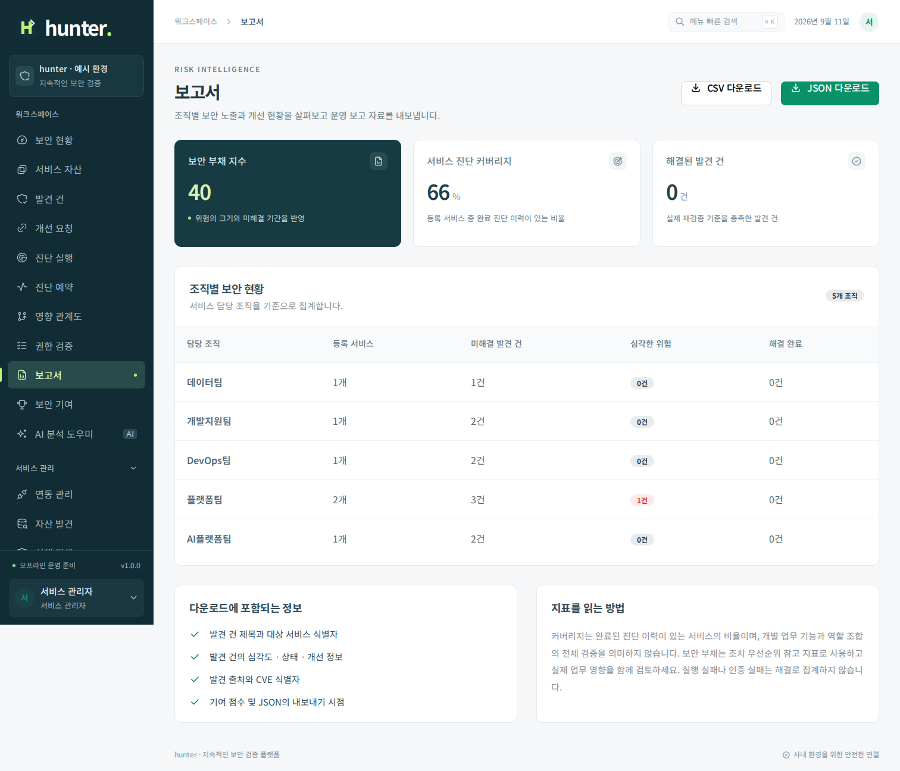
숫자를 공유할 때 서비스 범위, 기준 일시, 미검증 항목과 진단 한계를 함께 설명합니다. 등록 서비스 대비 진단 이력의 비율은 모든 기능·역할·데이터 조합을 검사한 상세 커버리지와 다릅니다.
8.2 기여 현황
기여 현황은 발견 건의 검토된 기여 점수를 모아 보여줍니다. 팀장과 관리자가 점수를 관리하며 일반 사용자가 자신의 발견 건에 임의 점수를 부여할 수 없습니다.
기여 기록은 발견 건·담당자·상태로 검색하고 심각도·인정 점수 등 열 제목으로 정렬할 수 있습니다. 기본은 인정 점수가 높은 순서입니다. 발견 건 제목을 선택하면 해당 발견 건의 상세 패널로 이동하며, 목록이 많으면 페이지를 나누어 확인합니다.
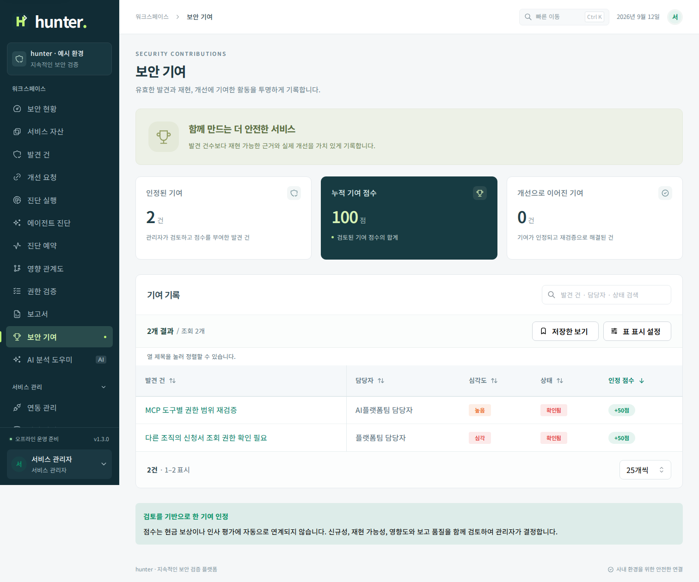
점수는 현금 보상, 급여나 인사 평가를 자동으로 확정하는 기능이 아닙니다. 조직이 정한 신고 품질, 재현 기여와 개선 지원 기준에 따라 검토 자료로 사용합니다.
9. AI 분석 도우미
관리자가 AI를 활성화하면 AI 분석 도우미를 사용할 수 있습니다. 질문을 입력하면 공급자의 스트림을 수신하고 정상 완료·권한 검증을 마친 답을 화면에 표시합니다. 연결 대체가 필요한 일부 실패 응답은 화면에 섞지 않으므로 첫 표시까지 기다릴 수 있습니다.
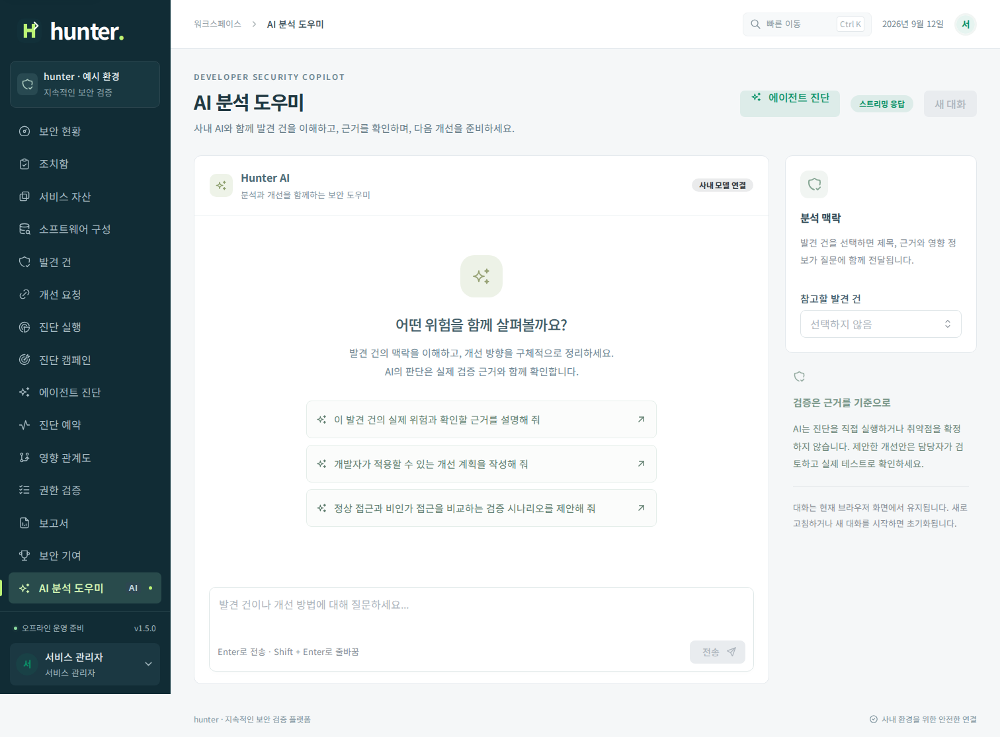
서버는 사용자에게 허용된 최근 서비스·발견 건의 메타데이터를 종류별 최대 100개씩 대화 맥락에 포함합니다. 비밀값과 증거 원문을 자동으로 넣지 않습니다. 질문에는 대상 서비스의 맥락, 마스킹된 증거와 알고 싶은 내용을 구체적으로 적습니다. 예: “이 헤더 점검 결과가 실제 서비스에 어떤 영향을 주는지 설명하고, Nginx 설정 수정 후 확인할 항목을 정리해 줘.”
AI 결과는 분석 제안입니다. 실제 취약점 확정, 승인, 임의 도구 호출과 자동 배포를 수행하지 않습니다. 답변의 재현 조건과 개선안은 실제 증거에 비추어 검토하세요.
긴 질문이 거부되면 입력 자료를 나누거나 출력 토큰 설정을 조정하도록 관리자에게 요청합니다. 최대 256K 설정은 모든 모델이 해당 크기를 지원한다는 의미가 아닙니다. 모델의 실제 컨텍스트와 최대 출력 한도를 함께 따라야 합니다.
10. 에이전트 진단
에이전트 진단은 등록한 서비스에 대해 목표를 계획으로 나누고, 허용된 Hunter 도구로 자료를 확인하며 진행합니다. 일반 AI 분석 도우미의 한 번의 대화보다 여러 단계의 작업이 필요한 경우에 사용합니다. 관리자가 에이전트와 AI 연결을 활성화해야 실행할 수 있습니다.
실행 기록에는 발견 건과 진단 결과가 포함될 수 있으므로, 조회에도 agents:read, services:read, findings:read, scans:read 네 권한이 모두 필요합니다. 새 실행에는 agents:write와 ai:use도 필요합니다. 개인 API 키를 사용할 때도 같은 조건과 현재 서비스 접근 권한을 적용합니다.
목록에서 목표·서비스·상태를 검색하고 상태와 서비스 필터를 함께 적용할 수 있습니다. 열 제목으로 정렬하고 페이지를 이동하여 실행을 찾습니다. 검색 조건과 페이지는 주소에 남으므로 새로고침 후에도 유지됩니다.
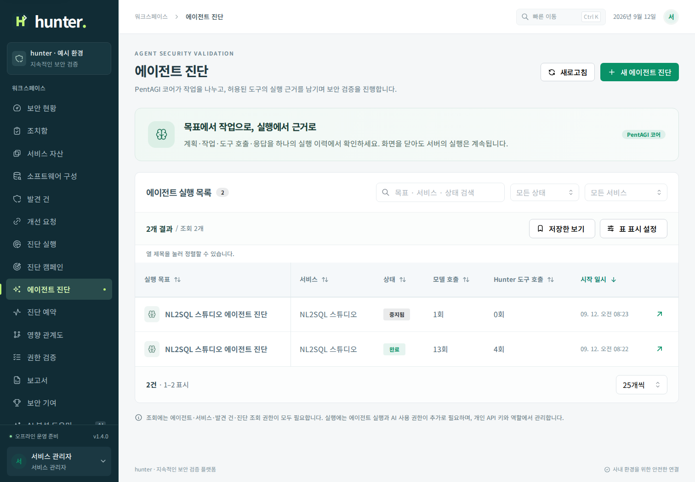
10.1 실행 만들기
- 에이전트 진단 메뉴에서 실행을 생성합니다.
- 본인에게 허용되고 진단 승인된 서비스를 선택합니다. 진단 허용 범위를 직접 선택하거나 유효한 범위 자동 선택으로 둡니다. 자동 선택을 사용해도 서버가 해당 서비스의 승인·만료 조건을 검사하며, 유효한 범위가 없으면 실행할 수 없습니다. 목표는 32,000바이트 이내로 구체적으로 입력합니다. 예: “현재 미해결 발견 건을 검토하고 추가 확인이 필요한 후보와 근거를 정리해 줘.”
- 생성한 실행의 상세 화면을 엽니다. 계획과 작업, 도구 호출 내역, 응답과 진행 이벤트를 확인합니다.
- 도구가 실제 진단을 요청하는 경우 서비스 승인, 유효한 허용 범위, 현재 사용자·키 권한과 선택적 검토 프로세스를 통과해야 합니다.
후보 등록은 확인된 취약점의 확정이나 해결 처리가 아닙니다. 담당자는 실제 증거와 재현 조건을 검토하여 발견 건의 상태를 관리합니다. 질문에 비밀키, 고객 개인정보나 원문 인증 정보를 넣지 않습니다.
10.2 진행 확인·중지·다시 시도
목록 경로는 /agents, 상세 경로는 /agents/실행ID입니다. 목록은 접근 가능한 최신 1,000개 실행을 표시하며 사용자당 진행 중인 실행은 최대 3개입니다. 상세 화면의 목표와 결과·에이전트 응답·도구 호출·실행 기록·연결된 진단 다섯 탭에서 진행 상태를 확인합니다. 새로고침해도 같은 상세 화면과 선택한 탭으로 돌아옵니다.
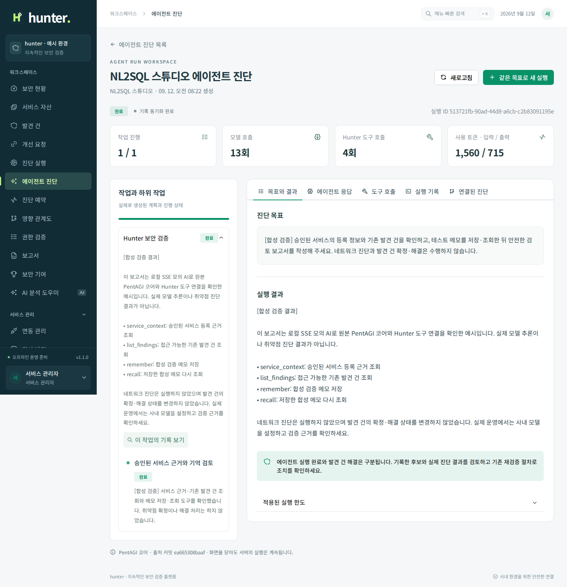
실행 기록에서는 시간순 이벤트와 상태 전환을 확인합니다. 오류가 있으면 마지막 이벤트와 최종 상태를 함께 확인하여 원인을 구분합니다.
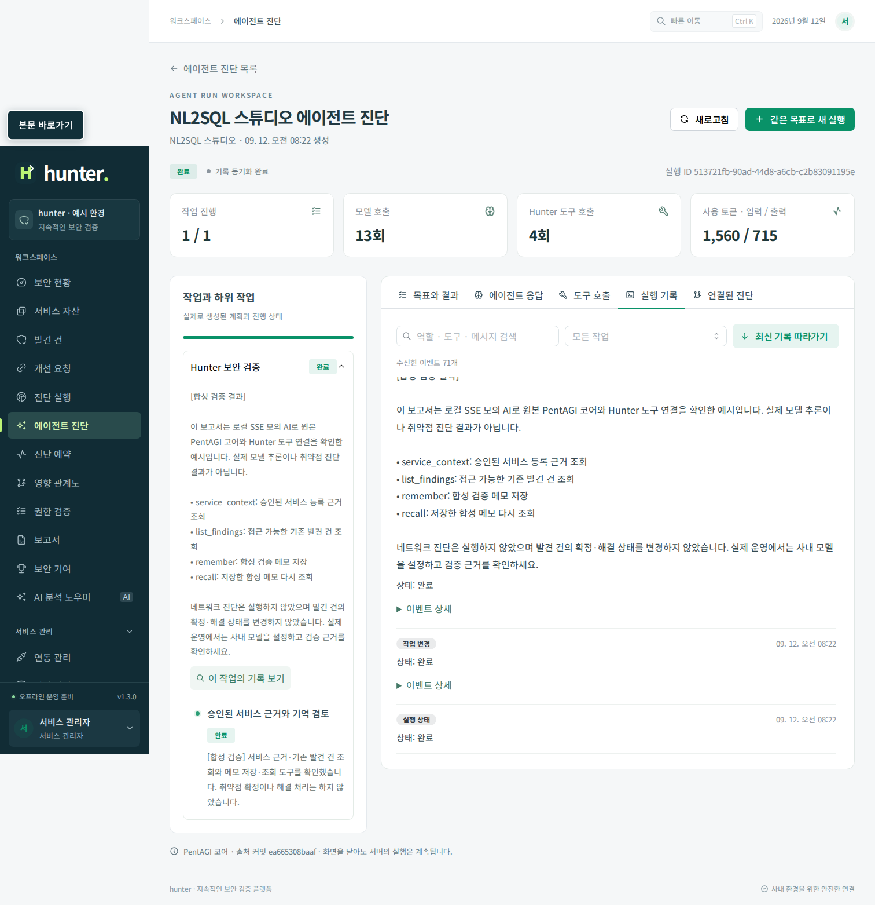
화면을 닫거나 실시간 연결이 끊겨도 서버의 실행은 계속됩니다. 연결이 복구되면 마지막 이벤트 다음부터 기록을 다시 가져옵니다. 실행을 멈추려면 실행 중지를 사용하고 실제 최종 상태를 확인합니다.
최대 반복 횟수는 각 역할의 원본 에이전트 대화 처리 반복에 적용합니다. 도구 호출 수는 아래 여덟 Hunter 도구의 호출을 집계하며, 내부 역할 위임은 이 도구 수에 포함하지 않습니다. 모델 호출과 전체 실행 시간에는 별도의 한도를 적용합니다.
실행 중지를 선택하면 해당 실행의 중단을 요청합니다. 중지는 이미 저장한 후보나 완료된 작업의 자동 취소·복원을 뜻하지 않습니다. 중지 후 목록과 상세 결과를 확인합니다. 같은 목표로 새 실행은 이전 서비스와 목표를 복사하고 허용 범위·현재 정책을 다시 확인하여 새 실행을 만듭니다. 종료된 이전 실행 이력은 유지합니다. 일시 정지·입력 대기·모델 연결 대기는 아래의 같은 실행 재개 절차를 사용합니다.
10.3 에이전트가 사용할 수 있는 도구
| 도구 기능 | 역할 |
|---|---|
서비스 조회 (service_context) |
해당 실행의 서비스 정보 확인 |
발견 건 조회 (list_findings) |
허용된 발견 건과 개선 상태 확인 |
진단 요청 (request_scan) |
관리자 허용과 기존 실행 통제 안에서 진단 요청 |
진단 결과 조회 (scan_result) |
요청한 진단의 상태와 결과 확인 |
후보 등록 (record_candidate) |
추가 검토할 발견 후보 저장 |
기억 저장 (remember) |
후속 작업에 활용할 맥락 저장 |
기억 검색 (recall) |
허용 범위 내 저장된 맥락 조회 |
참고 검색 (search_reference) |
관리자가 구성한 검색 공급자의 출처·요약 확인 |
도구 호출 탭에서 호출한 도구와 결과를 펼쳐 확인합니다. 도구 결과는 모델의 설명과 구분하여 확인하고, 연결된 실제 진단의 상태는 연결된 진단 탭에서 확인합니다.
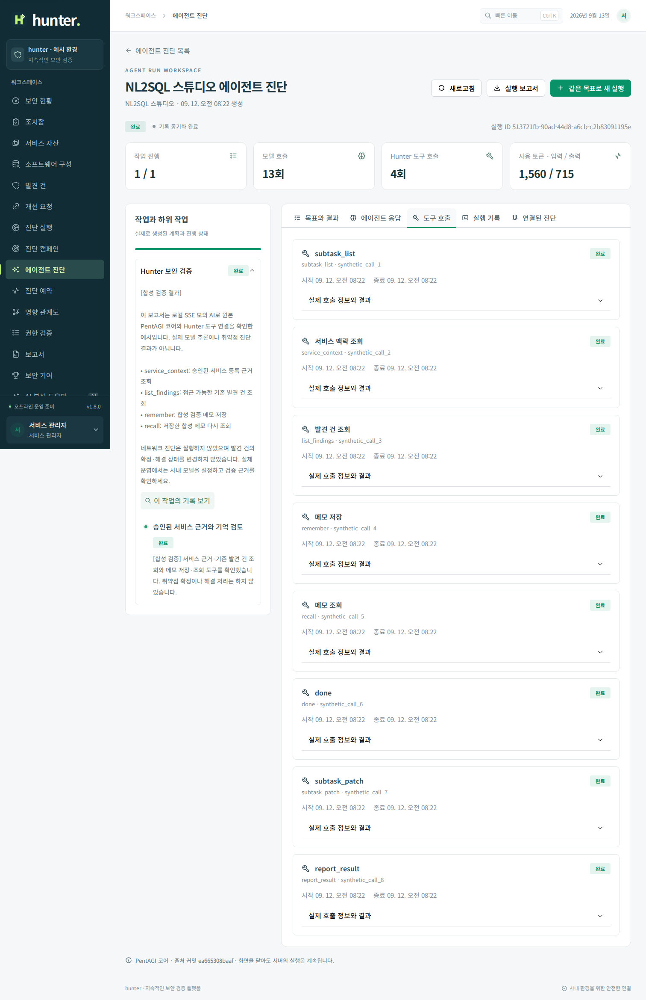
기억 기능은 관리자가 켜거나 끌 수 있습니다. 메모리는 사용자·서비스별 최대 100개를 저장하며 해당 범위에서 검색합니다. 사용자·서비스 권한을 넘어선 자료 조회 권한을 만들지 않습니다. 선택 검색과 고정 격리 진단은 관리자 설정·현재 정책 안에서 사용합니다. 임의 셸·Kali 컨테이너·검색된 공격 명령을 실행하는 범용 공격 도구는 제공하지 않습니다.
10.4 일시 중지와 추가 입력
일시중지는 진행 중인 도구가 반환한 안전한 경계에서 멈추라는 요청입니다. 버튼을 눌렀다고 이미 시작한 진단이나 외부 요청을 즉시 되돌리는 것은 아닙니다. 실행 상태가 일시 정지로 바뀌었는지 확인하세요. 실행 자체를 끝내려면 기존 실행 중지를 사용합니다.
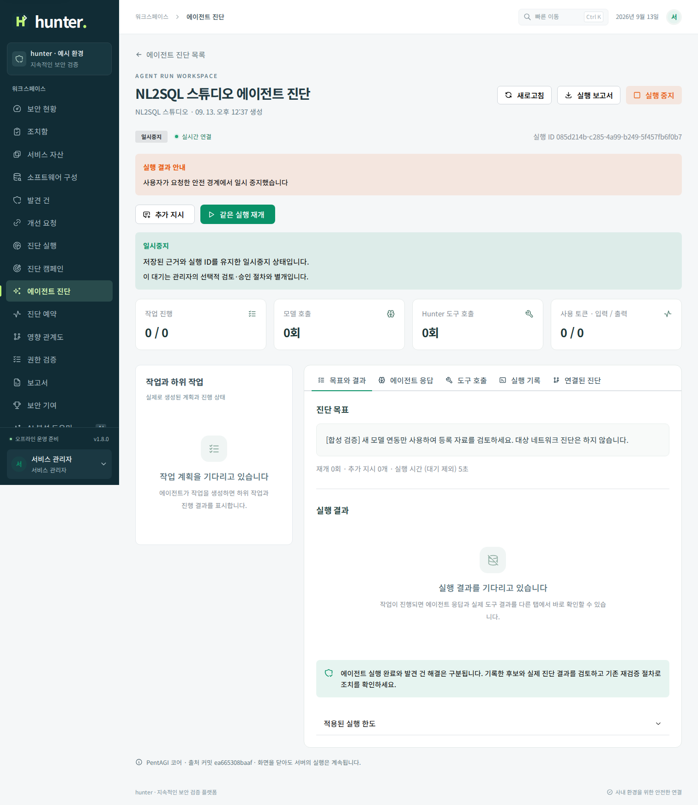
추가 지시에는 목표의 보충 설명이나 에이전트 질문에 대한 답을 적습니다. 한 번에 16,000바이트까지, 실행별 최대 20건을 저장하며 누적 저장 크기도 제한합니다. 내용은 마스킹·암호화하고 현재 권한을 다시 검사합니다. 입력으로 승인 범위·도구 권한·정책을 바꿀 수 없습니다.
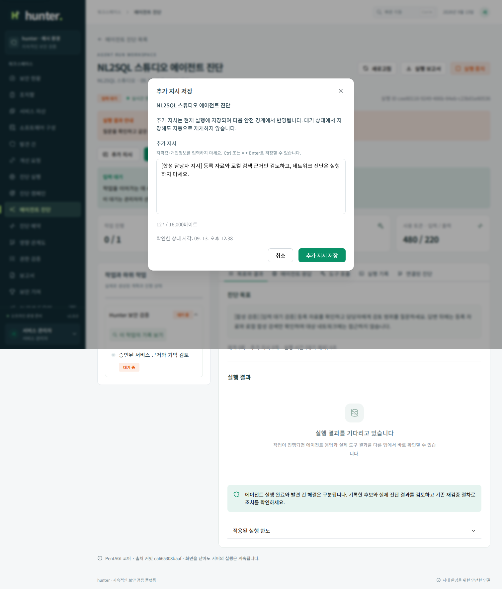
- 실행 중에 저장하면 다음 모델 호출에서 새 입력을 반영합니다.
- 추가 입력 대기라면 질문 이후의 새 입력을 저장하고 같은 실행 재개를 선택합니다.
- 일시 정지·연결 대기 상태에서도 입력만 저장하면 바로 실행하지 않습니다. 상태와 내용을 검토하고 재개합니다.
- 다른 사람이 상태를 바꿔 409 충돌이 표시되면 입력을 유지한 채 최신 실행을 확인합니다.
10.5 장애 후 같은 실행 재개
모든 모델 연결이 실패하면 모델 연결 대기로 전환할 수 있습니다. 다른 메뉴와 AI가 필요 없는 기능은 계속 사용할 수 있습니다. 관리자가 모델 설정이나 연결을 복구하면 같은 실행 재개로 같은 실행 ID를 대기열에 등록합니다. 일시 정지와 입력 대기도 같은 방식입니다.
재개는 저장된 작업·대화의 체크포인트를 사용합니다. 이전에 완료한 같은 도구 호출은 저장한 결과를 재사용하며 결과가 불명확한 실제 행위를 자동 중복 실행하지 않습니다. 원래 실행자의 계정·키, 현재 서비스·범위·정책과 누적 실행 한도를 다시 확인합니다. 원래 키가 폐기됐거나 범위·정책이 달라졌다면 다른 관리자가 누른다고 예전 승인이 되살아나지 않습니다. 현재 조건으로 새 실행을 만드세요.
종료된 완료·실패·취소·판단 불가 실행을 임의로 되살리거나 프로세스 강제 종료 뒤 작업을 무조건 자동 재실행하는 기능은 아닙니다. 같은 목표로 새 실행은 별도 실행 ID를 만드는 기존 기능입니다. 재개 횟수가 늘어도 모델·도구 호출 및 누적 활동 시간 예산이 초기화되지 않습니다. 역할별 반복 횟수는 원본 체인을 새로 호출할 때 다시 적용하는 한도입니다.
10.6 참고 검색과 지식 기억
관리자가 검색 공급자를 연결하면 참고 검색 도구가 검색어에 따른 제목·URL·요약과 출처를 반환합니다. 외부 서비스에 검색어가 전달될 수 있으므로 비밀정보·개인정보를 입력하지 마세요. 검색 자료는 지시나 실제 진단 증거가 아닌 참고 자료입니다. 페이지에 쓰인 실행 명령을 그대로 따라 수행하지 않습니다.
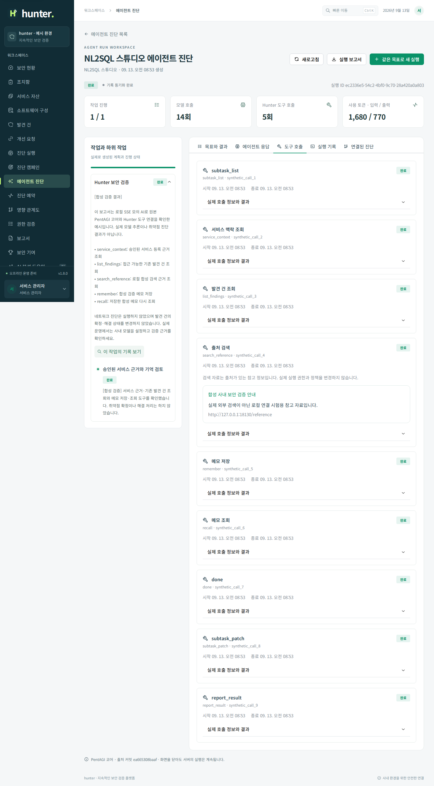
검색이 꺼져 있거나 공급자를 모두 사용할 수 없으면 검색 불가 이유를 기록하고 서비스·발견 건·기존 기억 같은 내부 근거로 계속합니다. 최신 검색 결과가 없는 상태를 최신 자료 확인 완료로 표현하지 않습니다.
기억 저장·검색은 사용자·서비스별 최대 100개의 암호화 로컬 기록을 기준으로 합니다. 관리자가 임베딩이나 Graphiti를 켰을 때만 해당 내용·검색어를 선택 연동으로 전달합니다. 원격 그래프의 문장을 그대로 답에 넣지 않고 현재 접근 가능한 로컬 기록과 식별자를 다시 대조합니다. 연결 장애에는 로컬 검색을 사용합니다.
10.7 격리된 고정 진단 프로파일
관리자가 해당 서비스의 망과 일치하는 실행 서버와 프로파일을 설정하면 진단 요청에서 격리 실행을 선택할 수 있습니다. 현재 제공하는 프로파일은 HTTP 헤더, TLS 인증서, TCP 연결입니다. 서버는 서비스 승인·유효 범위·현재 권한을 확인한 후 승인한 이미지와 고정 입력으로 한 번의 제한된 요청을 수행합니다.
작업이 생성된 뒤 응답이 끊겼다면 새 작업을 자동으로 만들지 않고 같은 컨테이너 식별자로 결과를 확인합니다. 판단 불가나 연결 복구 중 상태를 완료나 해결로 해석하지 않습니다. 임의 셸·공격 명령·자동 스캐너 다운로드·다수 공격 도구 번들은 제공하지 않습니다.
10.8 실행 보고서 다운로드
상세의 실행 보고서 메뉴에서 Markdown (.md), HTML (.html), **PDF (.pdf)**를 선택합니다. 실제 실행 상태, 목표, 저장된 한도, 작업, 현재 조회 가능한 연결 진단과 마스킹한 분석 결과를 파일로 받습니다. 진행·대기·실패 중에도 중간 보고서를 받을 수 있으며 다운로드 시각과 상태가 함께 표시됩니다.
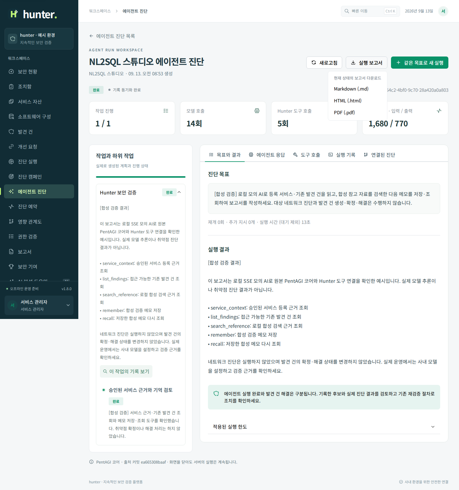
PDF는 서버에 포함한 한국어 폰트로 생성하며 외부 브라우저·변환 서버가 필요하지 않습니다. HTML은 데이터를 텍스트로 이스케이프하고 외부 스크립트·리소스를 불러오지 않습니다. 형식에 따라 글꼴·줄바꿈과 페이지가 달라도 같은 조회 결과를 사용합니다.
관리자가 다른 서비스로 보내기 허용 목록에 사내 서비스를 적어 두면 같은 메뉴 아래에 다른 서비스로 보내기 항목이 서비스 이름별로 나타납니다. 고르면 파일을 내려받지 않고 새 창에서 그 서비스가 열려 Markdown 보고서를 직접 받아 갑니다. 넘기는 표는 5분 동안 한 번만 쓸 수 있고 지금 이 실행을 읽을 수 있는 사람만 만들 수 있습니다. 목록이 비어 있으면 이 항목은 보이지 않습니다.
보고서에는 작업 앞 100개·작업별 하위 항목 앞 20개·연결 진단 앞 200개를 표시합니다. 목표 16,000자·작업 본문 20,000자·분석 결과 30,000자 등 긴 내용은 생략 안내와 함께 제한하며 전체 원본 대화·비밀값·증거 덤프가 아닙니다. 다운로드 직전에도 현재 서비스·키·역할 권한을 다시 확인합니다. 서버가 바쁘면 잠시 뒤 재시도하세요.
11. 선택적 팀장 검토·승인
관리자가 서비스 설정 → 검토·승인을 켠 경우에만 관련 메뉴와 흐름이 나타납니다.
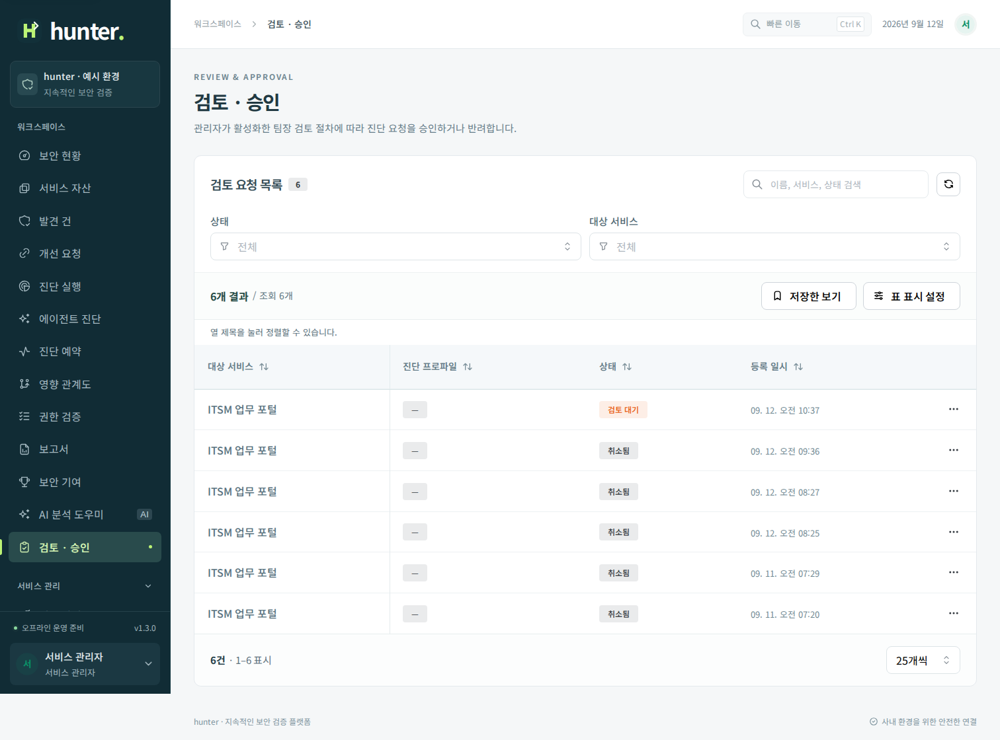
검토자는 요청 서비스, 프로파일, 허용 범위와 진단 목적을 확인한 후 승인 또는 반려 사유를 기록합니다. 승인하더라도 범위 만료나 긴급 중지가 발생하면 진단이 실행되지 않을 수 있습니다.
기능이 꺼져 있으면 별도 팀장 검토 단계 없이 같은 안전 정책을 거쳐 진단합니다. 승인 메뉴가 보이지 않는 것이 항상 오류는 아닙니다.
12. 개인화와 계정 보안
12.1 내 프로필
개인화 → 내 프로필에서 표시 이름과 기본 시작 화면을 저장합니다. 다음 로그인 시 선택한 시작 화면을 사용합니다. 로컬 비밀번호는 현재 비밀번호와 12~72바이트의 새 비밀번호를 입력하여 변경합니다.
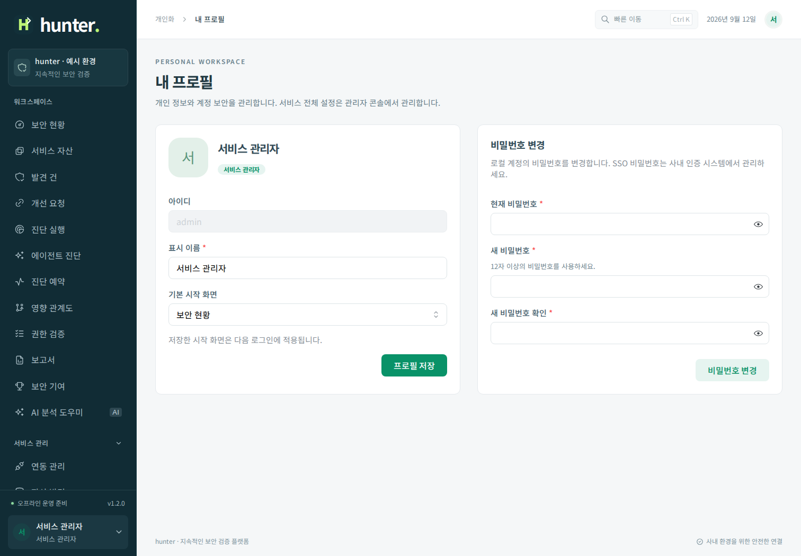
다른 메뉴를 보고 있는 중 새로고침할 때에는 저장한 시작 화면이 아니라 현재 메뉴 경로를 유지합니다. 프로필 메뉴의 서비스 버전은 운영자에게 장애를 문의할 때 활용합니다.
12.2 개인 API 키 발급
- 개인화 → 개인 API 키 → 새 키 발급을 선택합니다.
- 사용 목적을 구분할 수 있는 이름을 입력합니다.
- 필요한 권한만 선택합니다. 조회 연동에는 쓰기 권한을 추가하지 않습니다.
- 관리자가 허용한 범위 안에서 유효 기간을 지정합니다.
- 발급된 전체 키를 조직의 비밀 저장소에 보관합니다. 전체 키는 한 번만 표시됩니다.
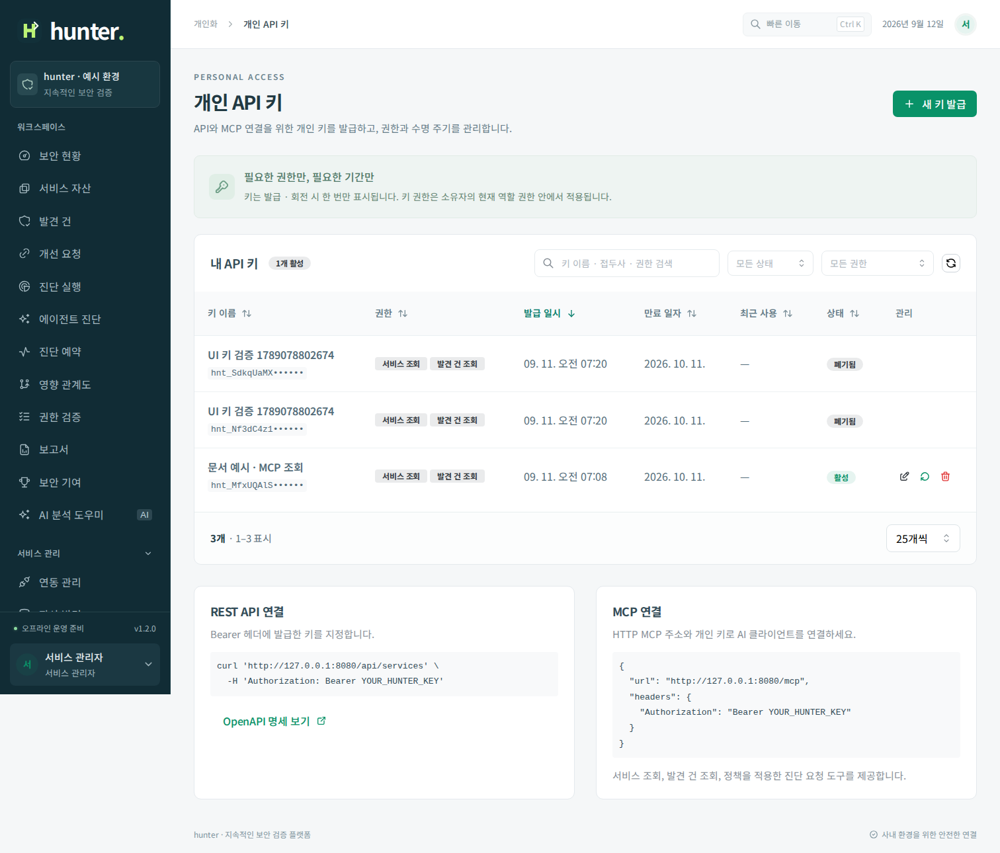
목록에서는 키 이름·접두사·권한을 검색하고 상태와 권한으로 필터링합니다. 활성·만료·폐기 상태를 구분하고 만료 일자나 최근 사용 일시로 정렬하여 정리할 키를 찾습니다. 검색과 필터는 키 원문을 다시 보여주거나 키 권한을 변경하지 않습니다.
12.3 키 변경·회전·폐기
권한 수정은 같은 키의 이름과 권한을 변경합니다. 키 회전은 새 토큰을 발급하고 이전 토큰을 즉시 무효화합니다. 키 폐기는 더 이상 사용하지 않을 키를 비활성화합니다.
회전 후 연결된 API·MCP 클라이언트의 키를 즉시 교체하세요. 중단을 피해야 한다면 별도 새 키를 발급하여 연동을 전환하고 이전 키를 폐기하는 순서로 진행합니다. 서버는 키 원문 대신 해시를 보관하므로 잃어버린 키 원문을 복구할 수 없습니다.
12.4 API와 MCP 사용
REST API는 Authorization: Bearer <개인 키> 헤더를 사용합니다. 명세는 로그인한 서비스의 /api/openapi.json에서 확인합니다.
curl 'https://hunter.internal/api/services' \
-H 'Authorization: Bearer YOUR_HUNTER_KEY'
MCP 주소는 https://hunter.internal/mcp이며 개인 Bearer 키를 지원하는 HTTP 클라이언트에서 연결합니다. 현재는 API 키 인증 방식이며 OAuth 동적 클라이언트 등록 방식은 아닙니다.
| MCP 도구 | 하는 일 | 필요한 권한 |
|---|---|---|
| hunter_list_services | 접근 가능한 서비스 조회 | services:read |
| hunter_list_findings | 접근 가능한 발견 건 조회 | findings:read |
| hunter_request_scan | 같은 정책을 적용한 진단 요청 | scans:write |
| hunter_finding_queue | 미조치 발견 건의 SLA·점수·위협 정보 | services:read + findings:read |
| hunter_list_components | 최신 SBOM의 구성요소와 영향 서비스 | services:read; 발견 건 연결은 findings:read 추가 |
| hunter_list_campaigns | 현재 접근 가능한 캠페인과 진단 상태 | services:read + scans:read |
| hunter_compare_campaigns | 같은 조건의 캠페인 관측 비교 | services:read + scans:read + findings:read |
MCP에서 진단을 요청해도 서비스 승인, 범위 제한, 팀장 승인 설정과 긴급 중지를 우회하지 않습니다.
12.5 업무 알림을 받을 때
관리자가 알림 규칙을 켜면 새 발견 건·발견 건 변경·조치 기한·진단 완료·진단 실패·승인 대기를 조직이 지정한 이메일이나 문자·카카오톡 API로 전달할 수 있습니다. 알림을 읽은 뒤 Hunter에서 현재 자료와 담당자·기한을 확인하세요. 알림 자체가 진단 승인이나 발견 건 해결을 수행하지는 않습니다.
관리자는 고정 주소 또는 현재 담당자·서비스 소유자·조직·당직을 수신자로 지정합니다. 동적 수신에는 관리자가 확인한 연락처와 현재 서비스 접근 권한이 필요합니다. 내 프로필을 수정해도 관리자가 등록한 이메일·전화번호가 자동으로 바뀌지 않으며 개인 구독·수신 거부 화면은 제공하지 않습니다. 잘못된 주소나 더 이상 필요하지 않은 알림은 관리자에게 규칙 변경을 요청하세요.
게이트웨이 접수는 메일 릴레이나 메시지 API가 전달 요청을 받았다는 뜻입니다. 단말 수신·읽음까지 보장하지 않습니다. 받지 못했다면 알림 시각과 관련 업무를 관리자에게 알려 전달 이력을 확인하고, 같은 알림을 반복 발송하기 전에 공급자 결과를 확인합니다.
알림에 비밀번호·API 키·쿠키·원본 증거를 넣어 공유하지 않습니다. 관리자용 규칙 미리보기는 합성 값 확인이며 외부 발송이 없지만, 테스트 발송은 실제 요청이므로 시험용으로 허용한 대상만 사용합니다. 자세한 채널 설정과 결과 불명 복구는 관리자 가이드를 참고하세요.
12.6 내 업무 알림과 확인
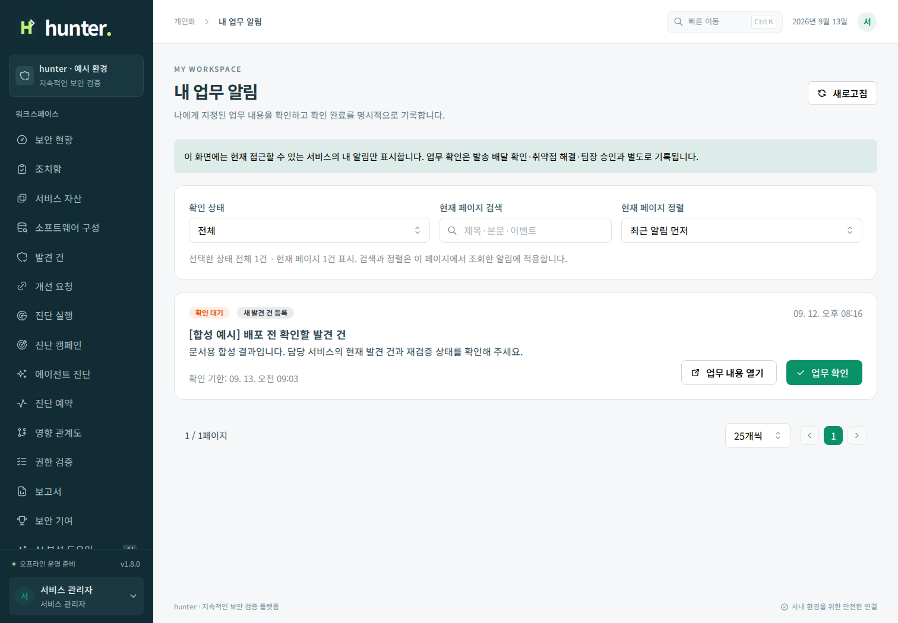
개인화 → 내 업무 알림(/personal/inbox)에서 나에게 지정된 알림을 확인합니다. 기본은 확인 대기이며 확인 완료·전체로 전환하고 페이지를 이동할 수 있습니다. 상태·페이지는 서버에서 조회하고 검색·정렬은 현재 받은 페이지 안에서만 적용합니다.
- 제목과 관련 서비스·사건, 확인 기한을 읽습니다. 현재 접근 권한이 사라진 서비스, 묶음 중 권한을 잃은 자료, 파기된 본문은 표시하지 않습니다.
- 관련 업무 링크로 현재 발견 건·진단 내용을 확인합니다. 링크 역시 로그인과 현재 자료 권한이 필요합니다.
- 업무 확인을 선택하고 내용을 확인했다는 기록을 남깁니다. 단순히 화면을 열었다고 자동 확인되지 않습니다. 이미 확인한 건에 같은 요청을 보내도 중복 상태 변경하지 않습니다.
업무 확인은 담당자가 내용을 확인했다는 기록입니다. 공급자의 메시지 전달, 팀장 승인·반려, 취약점 해결과 별도입니다. 승인 대기는 기존 검토·승인 화면에서 처리하고 발견 건은 조치·재검증 절차를 따릅니다.
관리자가 업무 확인과 미확인 규칙을 켜면 기한을 넘긴 발견 건에 후속 알림이 생성될 수 있습니다. 기한 예고는 조직의 시간대·영업일·휴일을 적용하며 주간 요약은 현재 접근 가능한 서비스만 집계합니다. 주간 해결 수는 현재 해결 상태와 기간 안의 변경 시각을 기준으로 하므로 정확한 상태 전환 횟수나 평균 해결 시간을 뜻하지 않습니다.
개인함이 비어 있으면 확인 상태를 전체로 바꾸고 관리자에게 수신자 연결·확인된 연락처·현재 권한을 확인합니다. 고정 이메일·전화번호만 있는 알림에는 Hunter 사용자 ID가 연결되지 않아 개인함에 나타나지 않을 수 있습니다. 연락처 확인은 관리자 확인이며 사용자가 직접 OTP를 인증하는 기능은 아닙니다.
12.7 자동화된 진단과 ITSM 변경 확인
관리자가 변경 규칙을 켜면 Git·배포 이벤트의 실제 경로·API·구성요소·권한 변경 목록과 일치한 진단만 요청합니다. 기존 대상 승인·유효 범위·정책과 선택적 팀장 검토를 통과하며, 규칙이 매칭됐다는 사실이 진단 완료를 뜻하지 않습니다. 외부 결과 반입용 프로파일은 수입 대기만 만들고 외부 스캐너를 실행하지 않습니다.
ITSM 연동을 사용하는 개선 요청은 외부 담당자·기한·상태를 동기화할 수 있습니다. 내 담당자·기한 수정과 외부 수정이 충돌하면 기존 값을 유지하고 관리자 검토를 요청합니다. 외부 티켓 완료만으로 발견 건이 해결되지 않습니다. 관리자가 허용한 명시적 배포 확인에만 지원되는 재검증을 요청하고 실제 결과로 해결을 판단합니다.
알림을 받지 못했을 때는 관리자에게 전달 이력을 확인하도록 요청합니다. 게이트웨이 접수, 공급자 전달 결과, 업무 확인이 서로 다른 상태이므로 같은 알림을 반복 발송해 달라고 요청하기 전에 어느 단계인지 확인하세요. 결과 불명·충돌·설정 변경 이력은 자동 재발송하거나 대체 채널로 보내지 않습니다.
13. 자주 겪는 문제
| 증상 | 확인할 사항 |
|---|---|
| 로그인 실패 | 아이디·비밀번호, 사용자 비활성화, 사내 OIDC 상태 |
| 메뉴가 보이지 않음 | 계정 역할 권한과 선택적 기능 활성화 여부 |
| 목록이 비어 있음 | 검색 필터, 서비스 소유 범위, 실제 등록 데이터 |
| 진단 요청 거부 | 서비스 승인, 범위 만료, 호스트·경로 일치, 긴급 중지 |
| 진단이 판단 불가 | 인증 상태, 대상 응답 오류, 시간 초과, 실제 검증 범위 |
| AI가 응답하지 않음 | 관리자 AI 활성화, 사내 모델 연결, 모델명과 토큰 한도 |
| API가 401 반환 | 키 만료·회전·폐기, 계정 비활성화 |
| API가 403 반환 | 키 권한과 계정 역할 권한, 서비스 접근 범위 |
| 조치함의 정보 없음 | KEV·EPSS 미반입 또는 해당 CVE 없음. 0점·안전 판정으로 해석하지 않음 |
| SBOM 반입 실패 | 지원 JSON 버전, 8 MiB·구성요소 1~10,000개·의존 관계 100,000개 한도, 참조·식별자 오류 |
| 캠페인 시작 실패 | 모든 대상의 현재 접근·승인·범위·긴급 중지 상태. 실패한 시작은 전체 취소됨 |
| 캠페인 비교 불가 | 양쪽 완료 여부·대상·정책·버전·스냅샷 확인. 외부 수입·이전 버전 결과는 미지원 |
| 편집 충돌·일괄 변경 충돌 | 내 입력 유지 여부와 최신 자료를 확인하고, 변경된 항목을 다시 검토한 뒤 저장 |
| CSV·주소 복사 실패 | 현재 조회 범위·브라우저 다운로드와 클립보드 권한 |
| 새로고침 후 화면 오류 | 사용 중인 정확한 URL과 버전을 기록하여 운영자에게 전달 |
비정상적인 응답을 받으면 한국어 오류 안내의 다시 시도를 사용합니다. 예상하지 않은 화면 오류에는 페이지 다시 불러오기, 시작 화면으로 복구 버튼을 제공합니다. 서버에 이미 저장한 자료와 실행 중 진단은 유지되지만 화면 메모리에만 남은 입력은 자동 복구를 보장하지 않습니다.
문의할 때 비밀키나 비밀번호를 보내지 말고, 발생 시각, 화면 경로, 서비스 버전, 오류 메시지와 관련 작업 식별자를 전달합니다.
14. 전체 화면 바로가기
로그인 · 보안 현황 · 서비스 자산 · 발견 건 · 진단 작업 · 관계 그래프 · 권한 검증 · 보고서 · 기여 현황 · AI 도우미 · 에이전트 진단 · 에이전트 상세 · 검토·승인 · 내 프로필 · 개인 키
{kind=link}
{kind=link}
{kind=link}
{kind=link}
{kind=link}
{kind=link}
{kind=link}
{kind=link}
{kind=link}
{kind=link}
{kind=link}
{kind=link}
{kind=link}
{kind=link}
{kind=link}
{kind=link}